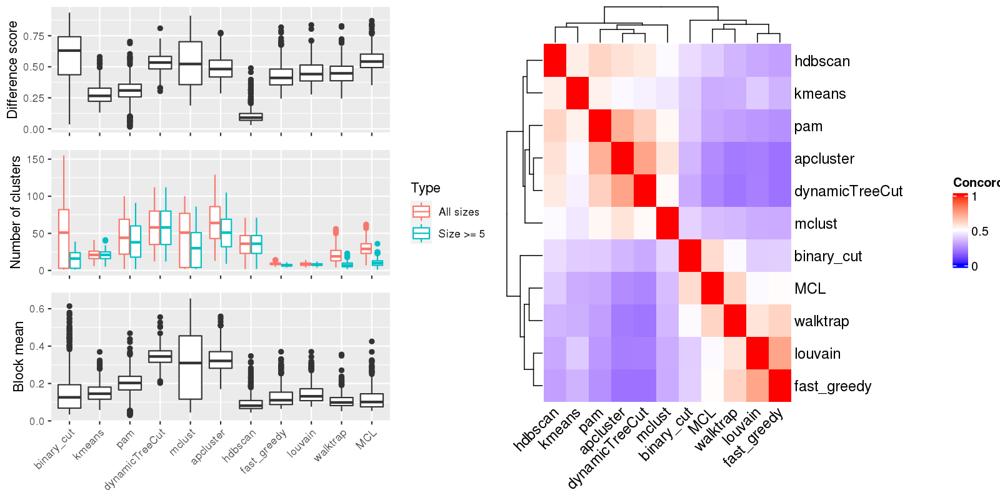

Figure 1.Compare clustering results. Left panel: The difference score, number of clusters and the block mean of different clusterings. Right panel: Concordance between clustering methods. The concordance measures how similar two clusterings are. The definition of the concordance score can be found here.

Table 1.Number of clusters identified by each clustering method. Numbers in the table indicate the number of clusters. The numbers inside the parentheses are the number of clusters with size >= 5.
| ID | binary_cut | kmeans | pam | dynamicTreeCut | mclust | apcluster | hdbscan | fast_greedy | louvain | walktrap | MCL | Details |
|---|---|---|---|---|---|---|---|---|---|---|---|---|
| E-GEOD-101794_g2_g1 | 5(5) | 20(20) | 70(64) | 81(81) | 3(3) | 94(76) | 49(49) | 7(6) | 7(7) | 25(13) | 23(11) | view |
| E-GEOD-10311_A-AFFY-44_g6_g4 | 1(1) | 26(26) | 67(58) | 75(75) | 3(3) | 88(70) | 44(44) | 6(5) | 6(6) | 12(5) | 18(5) | view |
| E-GEOD-104288_g2_g1 | 33(9) | 10(10) | 2(2) | 20(20) | 29(15) | 19(16) | 14(14) | 7(5) | 6(6) | 8(3) | 12(3) | view |
| E-GEOD-10718_A-AFFY-44_g4_g3 | 3(3) | 16(16) | 2(2) | 45(45) | 71(32) | 54(39) | 27(27) | 10(7) | 9(8) | 21(7) | 31(9) | view |
| E-GEOD-10718_A-AFFY-44_g5_g6 | 43(24) | 15(15) | 2(2) | 59(59) | 64(48) | 64(51) | 36(36) | 8(6) | 8(6) | 11(5) | 28(9) | view |
| E-GEOD-10797_A-AFFY-37_g1_g3 | 79(27) | 27(27) | 60(54) | 66(66) | 81(52) | 61(56) | 45(45) | 10(7) | 8(8) | 20(11) | 37(18) | view |
| E-GEOD-10927_A-AFFY-44_g2_g3 | 33(11) | 13(12) | 2(2) | 37(37) | 35(24) | 51(30) | 23(23) | 8(5) | 7(7) | 17(5) | 25(11) | view |
| E-GEOD-11285_A-AFFY-44_g1_g2 | 46(10) | 12(12) | 24(18) | 28(28) | 2(2) | 34(23) | 15(15) | 11(8) | 9(8) | 10(5) | 18(7) | view |
| E-GEOD-11285_A-AFFY-44_g3_g4 | 66(30) | 31(30) | 86(76) | 98(98) | 3(3) | 108(89) | 54(54) | 9(8) | 10(10) | 31(12) | 32(10) | view |
| E-GEOD-11324_A-AFFY-44_g1_g4 | 87(33) | 20(20) | 45(41) | 54(54) | 3(3) | 59(47) | 35(35) | 11(9) | 12(11) | 38(18) | 34(13) | view |
| E-GEOD-11352_A-AFFY-44_g1_g6 | 54(12) | 9(9) | 2(2) | 23(23) | 48(15) | 34(20) | 16(16) | 8(6) | 8(8) | 20(8) | 27(9) | view |
| E-GEOD-11352_A-AFFY-44_g3_g4 | 3(3) | 6(6) | 12(8) | 12(12) | 24(12) | 28(11) | 8(8) | 10(6) | 8(5) | 10(3) | 22(5) | view |
| E-GEOD-11428_A-AFFY-44_g3_g1 | 114(32) | 26(26) | 63(55) | 64(64) | 95(54) | 70(63) | 47(47) | 9(8) | 9(9) | 23(14) | 39(19) | view |
| E-GEOD-11783_A-AFFY-44_g1_g2 | 107(29) | 25(25) | 82(75) | 91(91) | 100(72) | 101(83) | 53(53) | 9(6) | 8(8) | 19(6) | 24(10) | view |
| E-GEOD-11791_A-AFFY-44_g3_g4 | 54(17) | 12(12) | 23(21) | 29(29) | 44(25) | 37(27) | 20(20) | 11(9) | 11(9) | 15(9) | 28(14) | view |
| E-GEOD-11839_A-AFFY-44_g2_g1 | 30(9) | 10(9) | 14(12) | 14(14) | 3(3) | 23(15) | 14(14) | 11(8) | 11(9) | 14(7) | 19(8) | view |
| E-GEOD-11886_A-AFFY-44_g3_g1 | 131(35) | 20(20) | 93(82) | 104(104) | 95(80) | 101(91) | 58(58) | 10(7) | 11(8) | 16(8) | 29(14) | view |
| E-GEOD-11919_A-AFFY-44_g1_g2 | 72(22) | 23(23) | 61(51) | 64(64) | 93(48) | 65(57) | 37(37) | 10(5) | 7(7) | 13(6) | 30(12) | view |
| E-GEOD-11919_A-AFFY-44_g1_g3 | 70(21) | 16(16) | 61(55) | 66(66) | 85(53) | 67(55) | 44(44) | 11(4) | 7(5) | 11(5) | 33(10) | view |
| E-GEOD-12265_A-AFFY-44_g1_g4 | 1(1) | 25(25) | 61(54) | 69(69) | 100(54) | 74(62) | 39(39) | 7(6) | 8(8) | 29(5) | 22(5) | view |
| E-GEOD-12355_A-AFFY-44_g11_g12 | 126(39) | 25(25) | 78(65) | 78(78) | 96(61) | 78(66) | 54(54) | 10(8) | 11(10) | 37(17) | 41(24) | view |
| E-GEOD-12355_A-AFFY-44_g4_g6 | 52(19) | 14(13) | 34(26) | 38(38) | 25(23) | 43(33) | 24(24) | 6(6) | 7(7) | 18(9) | 19(12) | view |
| E-GEOD-12355_A-AFFY-44_g7_g8 | 101(30) | 28(28) | 74(63) | 78(78) | 94(57) | 71(65) | 50(50) | 9(5) | 9(9) | 19(12) | 43(24) | view |
| E-GEOD-12355_A-AFFY-44_g7_g9 | 75(25) | 18(18) | 48(40) | 50(50) | 74(40) | 51(44) | 34(34) | 8(6) | 9(8) | 18(10) | 32(12) | view |
| E-GEOD-12446_A-AFFY-44_g1_g4 | 23(9) | 10(10) | 2(2) | 15(15) | 19(12) | 16(12) | 12(12) | 6(6) | 6(6) | 4(3) | 7(6) | view |
| E-GEOD-12452_A-AFFY-44_g2_g1 | 59(21) | 16(16) | 31(25) | 32(32) | 48(23) | 30(27) | 24(24) | 7(7) | 10(9) | 32(10) | 30(11) | view |
| E-GEOD-12773_A-AFFY-44_g1_g2 | 73(24) | 19(19) | 75(71) | 85(85) | 2(2) | 83(74) | 52(52) | 8(7) | 8(8) | 16(7) | 26(12) | view |
| E-GEOD-12791_A-AFFY-33_g4_g2 | 70(28) | 24(24) | 97(85) | 103(103) | 96(71) | 102(88) | 69(69) | 11(7) | 12(9) | 44(23) | 44(23) | view |
| E-GEOD-12886_A-AFFY-44_g1_g2 | 69(16) | 19(19) | 37(31) | 42(42) | 66(31) | 56(39) | 25(25) | 9(7) | 9(8) | 16(5) | 30(9) | view |
| E-GEOD-12963_A-AFFY-44_g3_g1 | 20(19) | 24(23) | 50(46) | 53(53) | 44(38) | 49(45) | 33(33) | 10(6) | 10(9) | 13(8) | 29(14) | view |
| E-GEOD-13274_A-AFFY-44_g1_g3 | 18(18) | 27(27) | 60(53) | 65(65) | 99(48) | 86(61) | 43(43) | 11(8) | 11(9) | 38(14) | 41(16) | view |
| E-GEOD-13637_A-AFFY-44_g1_g2 | 1(1) | 34(34) | 96(89) | 109(109) | 98(77) | 123(92) | 60(60) | 8(6) | 7(7) | 35(13) | 44(14) | view |
| E-GEOD-13637_A-AFFY-44_g1_g9 | 134(37) | 26(25) | 97(82) | 107(107) | 81(67) | 113(95) | 60(60) | 11(7) | 8(7) | 37(16) | 50(19) | view |
| E-GEOD-13637_A-AFFY-44_g5_g1 | 1(1) | 25(25) | 60(53) | 67(67) | 88(52) | 78(60) | 41(41) | 11(7) | 7(6) | 16(5) | 35(6) | view |
| E-GEOD-13637_A-AFFY-44_g5_g3 | 104(37) | 33(33) | 84(76) | 100(100) | 96(75) | 104(86) | 60(60) | 8(7) | 9(9) | 17(7) | 48(25) | view |
| E-GEOD-13762_A-AFFY-44_g3_g2 | 122(20) | 33(33) | 87(75) | 95(95) | 72(61) | 98(79) | 53(53) | 11(7) | 7(7) | 28(11) | 42(14) | view |
| E-GEOD-13763_A-AFFY-44_g1_g2 | 73(21) | 22(21) | 2(2) | 46(46) | 2(2) | 70(46) | 32(32) | 10(6) | 7(7) | 13(5) | 30(9) | view |
| E-GEOD-13763_A-AFFY-44_g1_g4 | 56(6) | 14(13) | 30(21) | 37(37) | 60(23) | 53(32) | 20(20) | 9(8) | 7(7) | 12(5) | 23(3) | view |
| E-GEOD-13763_A-AFFY-44_g3_g2 | 92(23) | 17(17) | 55(48) | 57(57) | 88(45) | 60(52) | 35(35) | 8(6) | 8(8) | 19(8) | 34(14) | view |
| E-GEOD-13763_A-AFFY-44_g3_g4 | 3(3) | 18(18) | 34(31) | 38(38) | 3(3) | 44(30) | 24(24) | 8(7) | 10(7) | 11(5) | 20(5) | view |
| E-GEOD-13887_A-AFFY-44_g3_g2 | 97(28) | 26(25) | 80(68) | 91(91) | 67(56) | 71(64) | 51(51) | 10(8) | 11(9) | 36(16) | 51(24) | view |
| E-GEOD-13909_A-AFFY-44_g3_g4 | 100(32) | 28(28) | 85(75) | 95(95) | 51(49) | 100(82) | 65(65) | 12(6) | 7(7) | 19(8) | 40(15) | view |
| E-GEOD-13987_A-AFFY-44_g5_g6 | 60(18) | 28(27) | 46(41) | 49(49) | 64(40) | 53(46) | 30(30) | 8(6) | 7(7) | 16(6) | 31(8) | view |
| E-GEOD-14580_A-AFFY-44_g2_g3 | 147(35) | 28(27) | 96(89) | 109(109) | 77(68) | 110(99) | 64(64) | 8(7) | 8(7) | 41(14) | 54(13) | view |
| E-GEOD-14905_A-AFFY-44_g3_g2 | 1(1) | 23(23) | 37(34) | 48(48) | 41(33) | 54(39) | 30(30) | 10(8) | 9(8) | 25(8) | 33(10) | view |
| E-GEOD-14995_A-AFFY-44_g1_g2 | 2(2) | 15(15) | 35(31) | 41(41) | 60(30) | 45(35) | 28(28) | 10(8) | 10(9) | 22(6) | 31(12) | view |
| E-GEOD-15799_A-AFFY-44_g1_g2 | 101(30) | 24(24) | 59(53) | 69(69) | 55(47) | 76(63) | 48(48) | 12(7) | 8(7) | 23(10) | 40(18) | view |
| E-GEOD-15811_A-AFFY-44_g1_g2 | 33(21) | 30(30) | 80(70) | 88(88) | 98(64) | 91(76) | 54(54) | 10(7) | 9(9) | 56(13) | 39(11) | view |
| E-GEOD-15811_A-AFFY-44_g1_g3 | 87(22) | 24(24) | 63(57) | 67(67) | 98(53) | 67(61) | 42(42) | 12(8) | 10(8) | 31(11) | 42(12) | view |
| E-GEOD-15811_A-AFFY-44_g1_g4 | 89(29) | 32(31) | 73(67) | 79(79) | 92(61) | 82(71) | 49(49) | 8(7) | 12(11) | 35(7) | 36(13) | view |
| E-GEOD-15893_A-AFFY-44_g3_g2 | 72(14) | 32(31) | 65(54) | 72(72) | 3(3) | 83(64) | 43(43) | 9(6) | 9(9) | 38(10) | 37(11) | view |
| E-GEOD-15947_A-AFFY-44_g1_g2 | 58(23) | 18(18) | 44(38) | 54(54) | 3(3) | 70(45) | 28(28) | 10(10) | 10(10) | 34(10) | 40(16) | view |
| E-GEOD-16066_A-AFFY-44_g2_g1 | 17(8) | 12(12) | 20(15) | 21(21) | 35(18) | 32(21) | 13(13) | 11(9) | 10(8) | 32(8) | 14(4) | view |
| E-GEOD-1615_A-AFFY-33_g6_g5 | 1(1) | 15(15) | 38(28) | 40(40) | 39(26) | 56(32) | 21(21) | 10(9) | 10(10) | 28(7) | 30(14) | view |
| E-GEOD-16179_A-AFFY-44_g1_g4 | 13(8) | 8(8) | 2(2) | 18(18) | 25(14) | 19(17) | 12(12) | 7(6) | 8(7) | 11(5) | 16(5) | view |
| E-GEOD-16238_A-AFFY-44_g2_g1 | 59(16) | 18(17) | 2(2) | 41(41) | 40(32) | 59(40) | 26(26) | 11(6) | 11(7) | 20(6) | 37(11) | view |
| E-GEOD-16837_A-AFFY-44_g22_g11 | 2(2) | 32(29) | 51(46) | 57(57) | 61(43) | 66(51) | 35(35) | 10(8) | 10(10) | 27(15) | 24(11) | view |
| E-GEOD-16837_A-AFFY-44_g22_g21 | 1(1) | 24(24) | 76(65) | 87(87) | 3(3) | 98(75) | 48(48) | 8(8) | 8(8) | 22(10) | 29(13) | view |
| E-GEOD-16837_A-AFFY-44_g22_g29 | 2(2) | 31(29) | 60(51) | 64(64) | 60(48) | 71(61) | 35(35) | 8(8) | 11(11) | 18(10) | 24(15) | view |
| E-GEOD-16837_A-AFFY-44_g22_g3 | 1(1) | 31(30) | 50(39) | 53(53) | 4(4) | 63(48) | 33(33) | 10(8) | 10(10) | 21(10) | 26(10) | view |
| E-GEOD-16837_A-AFFY-44_g22_g4 | 3(3) | 16(16) | 34(26) | 37(37) | 56(28) | 44(29) | 20(20) | 8(7) | 9(9) | 15(6) | 23(7) | view |
| E-GEOD-16879_A-AFFY-44_g13_g10 | 82(23) | 30(30) | 88(72) | 93(93) | 47(45) | 101(83) | 54(54) | 6(6) | 7(7) | 32(10) | 33(14) | view |
| E-GEOD-16879_A-AFFY-44_g13_g12 | 124(35) | 29(29) | 87(77) | 97(97) | 2(2) | 96(83) | 56(56) | 10(7) | 8(6) | 22(9) | 40(11) | view |
| E-GEOD-17347_A-AFFY-44_g4_g2 | 1(1) | 23(23) | 60(53) | 73(73) | 99(52) | 78(61) | 46(46) | 9(8) | 10(9) | 29(6) | 36(10) | view |
| E-GEOD-17508_A-AFFY-44_g1_g2 | 53(20) | 22(20) | 26(24) | 30(30) | 2(2) | 38(28) | 16(16) | 12(10) | 11(10) | 17(8) | 22(9) | view |
| E-GEOD-18105_A-AFFY-44_g1_g2 | 59(17) | 15(14) | 29(26) | 30(30) | 51(23) | 40(33) | 20(20) | 9(8) | 9(7) | 23(9) | 27(8) | view |
| E-GEOD-18791_A-AFFY-44_g11_g2 | 87(26) | 24(24) | 62(58) | 74(74) | 2(2) | 87(65) | 45(45) | 9(8) | 8(8) | 25(10) | 45(21) | view |
| E-GEOD-18791_A-AFFY-44_g11_g6 | 1(1) | 24(24) | 57(52) | 62(62) | 88(51) | 73(57) | 43(43) | 10(5) | 11(8) | 24(9) | 36(17) | view |
| E-GEOD-19018_A-AFFY-44_g1_g3 | 85(20) | 27(27) | 2(2) | 70(70) | 2(2) | 77(65) | 39(39) | 7(5) | 6(6) | 9(6) | 21(8) | view |
| E-GEOD-19018_A-AFFY-44_g2_g1 | 84(19) | 23(23) | 47(40) | 56(56) | 2(2) | 67(48) | 37(37) | 14(8) | 10(9) | 37(10) | 34(12) | view |
| E-GEOD-19018_A-AFFY-44_g2_g4 | 131(39) | 22(22) | 2(2) | 96(96) | 3(3) | 107(90) | 59(59) | 8(6) | 5(5) | 7(4) | 35(12) | view |
| E-GEOD-19249_A-AFFY-37_g6_g5 | 85(25) | 23(23) | 73(63) | 83(83) | 87(59) | 78(67) | 48(48) | 8(6) | 8(7) | 18(11) | 32(12) | view |
| E-GEOD-19279_A-AFFY-33_g2_g4 | 1(1) | 26(25) | 53(45) | 61(61) | 77(47) | 69(54) | 36(36) | 11(8) | 8(8) | 26(6) | 34(8) | view |
| E-GEOD-19639_A-AFFY-44_g6_g4 | 29(17) | 19(18) | 34(27) | 39(39) | 2(2) | 55(36) | 22(22) | 11(8) | 9(9) | 32(8) | 25(8) | view |
| E-GEOD-19639_A-AFFY-44_g7_g5 | 3(3) | 15(14) | 2(2) | 39(39) | 67(30) | 46(35) | 25(25) | 8(7) | 9(9) | 20(9) | 29(10) | view |
| E-GEOD-19650_A-AFFY-44_g4_g1 | 1(1) | 28(27) | 50(39) | 60(60) | 63(39) | 62(46) | 36(36) | 10(7) | 9(9) | 46(11) | 31(8) | view |
| E-GEOD-19650_A-AFFY-44_g4_g2 | 69(15) | 14(14) | 2(2) | 33(33) | 39(27) | 45(33) | 25(25) | 7(6) | 5(5) | 8(3) | 25(8) | view |
| E-GEOD-19650_A-AFFY-44_g4_g3 | 18(18) | 18(18) | 30(26) | 30(30) | 52(25) | 37(28) | 23(23) | 8(6) | 9(8) | 15(6) | 26(12) | view |
| E-GEOD-20505_A-AFFY-44_g7_g4 | 70(18) | 19(18) | 53(49) | 60(60) | 76(43) | 59(51) | 37(37) | 9(8) | 10(7) | 10(4) | 33(10) | view |
| E-GEOD-20505_A-AFFY-44_g7_g5 | 52(20) | 15(15) | 47(39) | 49(49) | 65(32) | 54(42) | 33(33) | 9(7) | 6(6) | 7(3) | 27(7) | view |
| E-GEOD-20505_A-AFFY-44_g7_g6 | 22(17) | 28(28) | 51(45) | 59(59) | 3(3) | 63(50) | 36(36) | 9(7) | 7(7) | 18(6) | 26(8) | view |
| E-GEOD-20602_A-AFFY-33_g1_g2 | 55(11) | 21(21) | 34(30) | 36(36) | 55(29) | 38(34) | 23(23) | 9(4) | 8(5) | 15(4) | 27(7) | view |
| E-GEOD-21422_A-AFFY-44_g3_g1 | 2(2) | 23(22) | 2(2) | 70(70) | 89(54) | 84(64) | 43(43) | 10(6) | 7(7) | 18(5) | 48(10) | view |
| E-GEOD-21422_A-AFFY-44_g3_g2 | 118(23) | 24(24) | 2(2) | 96(96) | 2(2) | 110(88) | 58(58) | 8(6) | 5(5) | 9(2) | 41(11) | view |
| E-GEOD-21610_A-AFFY-44_g5_g1 | 28(10) | 8(7) | 16(13) | 17(17) | 28(15) | 27(17) | 13(13) | 9(9) | 10(9) | 15(4) | 17(4) | view |
| E-GEOD-22139_A-AFFY-44_g6_g3 | 41(9) | 14(13) | 24(18) | 23(23) | 43(19) | 36(22) | 18(18) | 10(8) | 9(9) | 28(7) | 24(6) | view |
| E-GEOD-22278_A-AFFY-41_g5_g1 | 72(29) | 31(31) | 77(72) | 87(87) | 68(58) | 85(75) | 57(57) | 7(5) | 7(7) | 18(11) | 23(11) | view |
| E-GEOD-22385_A-AFFY-37_g1_g2 | 155(27) | 25(25) | 95(81) | 109(109) | 80(72) | 115(92) | 66(66) | 10(6) | 10(9) | 32(13) | 41(14) | view |
| E-GEOD-22529_A-AFFY-33_g2_g1 | 82(14) | 23(23) | 66(61) | 75(75) | 3(3) | 68(61) | 47(47) | 10(6) | 9(6) | 18(7) | 25(4) | view |
| E-GEOD-22611_A-AFFY-44_g1_g6 | 4(4) | 9(8) | 12(9) | 12(12) | 2(2) | 19(11) | 8(8) | 9(8) | 8(8) | 7(4) | 12(5) | view |
| E-GEOD-22611_A-AFFY-44_g2_g3 | 24(9) | 14(12) | 14(11) | 21(21) | 5(5) | 21(16) | 7(7) | 8(7) | 7(6) | 10(3) | 14(5) | view |
| E-GEOD-22611_A-AFFY-44_g9_g4 | 28(7) | 6(6) | 11(9) | 13(13) | 20(10) | 18(10) | 9(9) | 9(6) | 9(6) | 5(4) | 12(4) | view |
| E-GEOD-22779_A-AFFY-44_g4_g1 | 1(1) | 21(21) | 62(53) | 71(71) | 79(52) | 86(60) | 37(37) | 7(6) | 9(9) | 39(10) | 25(8) | view |
| E-GEOD-22779_A-AFFY-44_g4_g3 | 1(1) | 19(19) | 46(38) | 57(57) | 3(3) | 65(48) | 32(32) | 8(7) | 8(8) | 18(2) | 27(5) | view |
| E-GEOD-23610_A-AFFY-44_g1_g2 | 86(16) | 13(13) | 3(3) | 33(33) | 59(26) | 45(33) | 17(17) | 7(6) | 7(7) | 19(7) | 26(10) | view |
| E-GEOD-23764_A-AFFY-44_g4_g1 | 63(21) | 20(18) | 27(25) | 31(31) | 46(26) | 40(29) | 25(25) | 13(10) | 11(10) | 31(10) | 35(14) | view |
| E-GEOD-23764_A-AFFY-44_g4_g2 | 13(13) | 16(16) | 33(31) | 40(40) | 60(31) | 40(37) | 27(27) | 9(7) | 9(8) | 26(9) | 28(11) | view |
| E-GEOD-23930_A-AGIL-28_g1_g2 | 2(2) | 21(20) | 33(29) | 44(44) | 2(2) | 49(35) | 25(25) | 10(5) | 8(5) | 7(4) | 20(8) | view |
| E-GEOD-23930_A-AGIL-28_g2_g4 | 1(1) | 19(19) | 37(29) | 38(38) | 67(27) | 51(33) | 26(26) | 12(9) | 10(10) | 54(10) | 24(5) | view |
| E-GEOD-24592_A-AFFY-37_g1_g3 | 104(23) | 21(21) | 2(2) | 98(98) | 100(70) | 105(87) | 55(55) | 8(5) | 6(6) | 18(7) | 36(11) | view |
| E-GEOD-24592_A-AFFY-37_g1_g5 | 102(22) | 23(23) | 2(2) | 70(70) | 2(2) | 72(57) | 39(39) | 10(5) | 9(7) | 11(4) | 36(10) | view |
| E-GEOD-24592_A-AFFY-37_g2_g6 | 89(29) | 25(25) | 2(2) | 79(79) | 95(66) | 84(70) | 50(50) | 8(6) | 8(8) | 14(6) | 37(13) | view |
| E-GEOD-24849_A-AFFY-44_g4_g3 | 25(10) | 7(7) | 2(2) | 15(15) | 18(12) | 22(15) | 12(12) | 8(8) | 8(6) | 7(4) | 14(7) | view |
| E-GEOD-25412_A-AFFY-141_g3_g1 | 103(34) | 22(22) | 76(68) | 87(87) | 100(70) | 87(76) | 57(57) | 10(6) | 10(8) | 14(7) | 43(22) | view |
| E-GEOD-25412_A-AFFY-141_g3_g2 | 75(28) | 16(16) | 41(32) | 44(44) | 63(37) | 50(39) | 28(28) | 6(5) | 7(7) | 15(8) | 25(11) | view |
| E-GEOD-25746_A-AFFY-44_g2_g1 | 48(12) | 13(12) | 24(19) | 23(23) | 44(20) | 32(20) | 17(17) | 10(9) | 11(10) | 20(6) | 22(5) | view |
| E-GEOD-26656_A-AFFY-44_g3_g1 | 90(22) | 24(24) | 91(80) | 111(111) | 3(3) | 120(91) | 58(58) | 9(6) | 7(7) | 10(3) | 26(11) | view |
| E-GEOD-26656_A-AFFY-44_g4_g2 | 2(2) | 13(13) | 2(2) | 40(40) | 65(31) | 50(37) | 24(24) | 8(6) | 8(8) | 16(6) | 15(5) | view |
| E-GEOD-26834_A-AFFY-37_g1_g4 | 82(34) | 18(18) | 76(63) | 84(84) | 94(68) | 92(74) | 54(54) | 11(6) | 9(7) | 21(12) | 37(18) | view |
| E-GEOD-28542_A-AFFY-141_g4_g2 | 89(36) | 31(31) | 63(57) | 71(71) | 95(56) | 70(64) | 45(45) | 11(6) | 9(8) | 19(9) | 38(20) | view |
| E-GEOD-28542_A-AFFY-141_g4_g3 | 98(20) | 26(26) | 61(55) | 75(75) | 100(61) | 70(58) | 47(47) | 7(5) | 7(6) | 12(7) | 29(14) | view |
| E-GEOD-28542_A-AFFY-141_g8_g6 | 33(10) | 12(11) | 20(18) | 22(22) | 27(16) | 23(19) | 16(16) | 8(4) | 4(4) | 11(4) | 17(6) | view |
| E-GEOD-28784_A-AFFY-33_g2_g1 | 1(1) | 24(24) | 40(34) | 48(48) | 69(38) | 51(36) | 30(30) | 11(8) | 10(9) | 21(7) | 24(5) | view |
| E-GEOD-28784_A-AFFY-33_g2_g3 | 1(1) | 24(24) | 92(81) | 106(106) | 3(3) | 110(90) | 63(63) | 10(9) | 7(7) | 39(11) | 37(15) | view |
| E-GEOD-28877_A-AGIL-28_g2_g1 | 1(1) | 13(13) | 19(17) | 22(22) | 28(18) | 26(18) | 17(17) | 13(11) | 13(11) | 10(5) | 24(15) | view |
| E-GEOD-29137_A-AFFY-44_g4_g1 | 3(3) | 24(23) | 56(47) | 61(61) | 56(42) | 71(57) | 38(38) | 10(7) | 9(7) | 30(9) | 36(8) | view |
| E-GEOD-29137_A-AFFY-44_g4_g2 | 2(2) | 12(11) | 20(16) | 24(24) | 39(20) | 39(16) | 12(12) | 10(7) | 9(8) | 9(4) | 13(4) | view |
| E-GEOD-29137_A-AFFY-44_g4_g3 | 86(31) | 24(24) | 88(79) | 109(109) | 3(3) | 111(95) | 59(59) | 8(5) | 9(8) | 34(13) | 34(13) | view |
| E-GEOD-29598_A-AFFY-37_g4_g3 | 8(8) | 18(16) | 29(26) | 29(29) | 51(24) | 33(28) | 24(24) | 11(7) | 8(8) | 16(7) | 29(10) | view |
| E-GEOD-30784_A-AFFY-44_g2_g1 | 53(22) | 33(31) | 45(36) | 49(49) | 66(41) | 60(41) | 32(32) | 9(9) | 8(8) | 41(10) | 35(11) | view |
| E-GEOD-31193_A-AFFY-44_g2_g5 | 57(16) | 20(20) | 46(42) | 55(55) | 64(45) | 74(54) | 37(37) | 11(6) | 10(8) | 20(5) | 37(10) | view |
| E-GEOD-31455_A-AFFY-44_g2_g3 | 1(1) | 23(21) | 30(26) | 35(35) | 3(3) | 52(28) | 22(22) | 8(6) | 8(7) | 16(4) | 19(4) | view |
| E-GEOD-31812_A-AFFY-141_g1_g2 | 24(13) | 10(10) | 11(11) | 13(13) | 22(11) | 16(13) | 12(12) | 12(8) | 11(8) | 9(3) | 17(6) | view |
| E-GEOD-3183_A-AFFY-33_g4_g2 | 2(2) | 20(20) | 2(2) | 80(80) | 62(53) | 87(72) | 46(46) | 9(6) | 8(7) | 30(10) | 33(8) | view |
| E-GEOD-31986_A-AFFY-141_g1_g3 | 24(13) | 11(11) | 3(3) | 27(27) | 35(21) | 29(24) | 17(17) | 8(4) | 7(6) | 16(5) | 12(5) | view |
| E-GEOD-32876_A-AFFY-44_g1_g2 | 2(2) | 10(9) | 25(20) | 27(27) | 2(2) | 36(27) | 17(17) | 10(8) | 8(7) | 12(7) | 15(7) | view |
| E-GEOD-3307_A-AFFY-33_g1_g13 | 122(21) | 30(30) | 84(69) | 94(94) | 100(69) | 102(77) | 49(49) | 7(7) | 10(10) | 13(6) | 35(5) | view |
| E-GEOD-3307_A-AFFY-33_g1_g7 | 19(15) | 13(13) | 30(23) | 33(33) | 41(28) | 42(30) | 20(20) | 10(10) | 12(11) | 17(7) | 23(8) | view |
| E-GEOD-33294_g1_g2 | 119(28) | 22(21) | 2(2) | 77(77) | 53(46) | 82(67) | 46(46) | 8(5) | 8(7) | 17(10) | 44(18) | view |
| E-GEOD-33552_A-AFFY-141_g9_g7 | 5(5) | 20(19) | 27(26) | 32(32) | 51(29) | 32(28) | 23(23) | 11(7) | 14(10) | 20(9) | 23(13) | view |
| E-GEOD-33643_A-AFFY-44_g7_g4 | 55(18) | 28(28) | 50(43) | 56(56) | 82(48) | 65(49) | 38(38) | 10(8) | 9(9) | 43(15) | 31(10) | view |
| E-GEOD-33643_A-AFFY-44_g7_g5 | 42(17) | 20(19) | 36(30) | 45(45) | 63(35) | 51(37) | 26(26) | 9(8) | 10(10) | 23(6) | 23(7) | view |
| E-GEOD-33643_A-AFFY-44_g7_g8 | 111(26) | 33(33) | 75(65) | 88(88) | 91(65) | 96(74) | 55(55) | 8(6) | 11(10) | 33(12) | 34(12) | view |
| E-GEOD-33950_A-AFFY-44_g1_g2 | 7(6) | 15(11) | 14(9) | 14(14) | 27(11) | 30(9) | 8(8) | 14(8) | 12(8) | 11(3) | 28(7) | view |
| E-GEOD-34635_A-AFFY-44_g1_g5 | 2(2) | 17(17) | 2(2) | 64(64) | 93(51) | 87(64) | 36(36) | 7(5) | 8(8) | 23(8) | 26(5) | view |
| E-GEOD-34670_A-AFFY-33_g2_g1 | 79(23) | 26(26) | 56(50) | 65(65) | 50(42) | 66(58) | 34(34) | 8(7) | 11(9) | 22(7) | 32(9) | view |
| E-GEOD-35006_A-AFFY-44_g4_g3 | 55(17) | 18(17) | 28(25) | 33(33) | 51(26) | 44(30) | 21(21) | 11(10) | 9(9) | 16(6) | 28(9) | view |
| E-GEOD-35198_A-AFFY-44_g2_g1 | 4(4) | 23(23) | 44(37) | 49(49) | 62(38) | 57(44) | 32(32) | 11(8) | 10(9) | 26(8) | 31(10) | view |
| E-GEOD-36035_A-AFFY-141_g4_g2 | 1(1) | 11(11) | 18(14) | 21(21) | 37(17) | 32(21) | 12(12) | 9(6) | 7(7) | 12(7) | 11(4) | view |
| E-GEOD-36076_A-AFFY-44_g3_g2 | 51(14) | 17(16) | 28(23) | 34(34) | 55(24) | 43(28) | 21(21) | 12(9) | 9(8) | 24(10) | 38(11) | view |
| E-GEOD-36287_A-AFFY-44_g7_g4 | 10(10) | 22(20) | 36(31) | 39(39) | 40(28) | 56(41) | 24(24) | 8(8) | 9(9) | 17(9) | 24(14) | view |
| E-GEOD-36287_A-AFFY-44_g7_g5 | 65(21) | 23(23) | 2(2) | 55(55) | 82(40) | 62(47) | 31(31) | 8(8) | 9(9) | 16(7) | 29(13) | view |
| E-GEOD-36509_A-AFFY-141_g4_g6 | 10(9) | 12(11) | 16(15) | 27(27) | 37(19) | 26(23) | 16(16) | 11(8) | 9(8) | 12(5) | 16(8) | view |
| E-GEOD-36761_g2_g1 | 11(11) | 27(24) | 45(39) | 50(50) | 4(4) | 53(46) | 32(32) | 8(8) | 8(8) | 22(9) | 21(4) | view |
| E-GEOD-3678_A-AFFY-44_g1_g2 | 1(1) | 21(20) | 38(35) | 44(44) | 57(29) | 51(40) | 28(28) | 7(6) | 7(7) | 19(5) | 19(1) | view |
| E-GEOD-37258_A-AFFY-44_g3_g2 | 1(1) | 18(18) | 41(28) | 41(41) | 4(4) | 56(34) | 21(21) | 6(6) | 9(9) | 14(3) | 22(4) | view |
| E-GEOD-37571_A-AGIL-28_g18_g9 | 1(1) | 23(23) | 51(49) | 65(65) | 3(3) | 65(54) | 39(39) | 8(7) | 9(9) | 31(9) | 36(12) | view |
| E-GEOD-39121_g1_g2 | 1(1) | 29(28) | 61(54) | 74(74) | 57(46) | 89(65) | 45(45) | 8(5) | 8(7) | 35(11) | 27(12) | view |
| E-GEOD-39685_A-AFFY-141_g2_g1 | 49(16) | 17(17) | 33(26) | 35(35) | 55(27) | 34(29) | 23(23) | 11(8) | 11(8) | 23(9) | 29(10) | view |
| E-GEOD-39843_A-AFFY-44_g2_g1 | 2(2) | 15(14) | 24(20) | 26(26) | 3(3) | 43(22) | 17(17) | 10(7) | 9(8) | 24(8) | 16(7) | view |
| E-GEOD-39843_A-AFFY-44_g4_g3 | 1(1) | 21(21) | 38(33) | 42(42) | 3(3) | 54(37) | 29(29) | 9(9) | 12(12) | 29(12) | 31(12) | view |
| E-GEOD-40613_A-AFFY-44_g4_g3 | 1(1) | 41(40) | 80(67) | 90(90) | 87(67) | 99(79) | 55(55) | 8(7) | 9(8) | 19(8) | 24(9) | view |
| E-GEOD-40750_A-AFFY-44_g2_g1 | 1(1) | 29(29) | 65(59) | 80(80) | 57(52) | 78(64) | 51(51) | 7(5) | 6(6) | 15(8) | 20(8) | view |
| E-GEOD-40968_A-AFFY-44_g6_g5 | 43(14) | 9(9) | 18(17) | 21(21) | 20(16) | 24(19) | 15(15) | 9(7) | 8(7) | 12(5) | 23(11) | view |
| E-GEOD-41364_A-AFFY-44_g3_g1 | 1(1) | 12(12) | 2(2) | 25(25) | 41(21) | 30(23) | 17(17) | 8(6) | 8(7) | 18(8) | 20(10) | view |
| E-GEOD-41405_A-AFFY-141_g1_g3 | 7(7) | 15(14) | 22(19) | 24(24) | 24(19) | 33(22) | 16(16) | 11(8) | 12(10) | 14(7) | 23(7) | view |
| E-GEOD-41405_A-AFFY-141_g1_g6 | 47(14) | 20(18) | 22(20) | 28(28) | 2(2) | 35(26) | 15(15) | 10(7) | 8(7) | 13(9) | 21(9) | view |
| E-GEOD-41405_A-AFFY-141_g1_g7 | 2(2) | 15(14) | 26(24) | 32(32) | 42(25) | 37(30) | 22(22) | 11(7) | 11(8) | 17(8) | 25(11) | view |
| E-GEOD-41405_A-AFFY-141_g1_g8 | 1(1) | 10(10) | 14(12) | 15(15) | 3(3) | 20(13) | 9(9) | 10(6) | 8(7) | 11(4) | 14(5) | view |
| E-GEOD-41586_g3_g1 | 81(19) | 21(20) | 2(2) | 59(59) | 65(43) | 72(53) | 37(37) | 9(7) | 9(8) | 29(9) | 36(9) | view |
| E-GEOD-41663_A-AFFY-44_g6_g2 | 55(11) | 16(16) | 32(29) | 35(35) | 39(31) | 42(34) | 24(24) | 8(6) | 9(7) | 8(4) | 28(10) | view |
| E-GEOD-41678_A-AFFY-141_g14_g12 | 37(14) | 17(17) | 29(26) | 33(33) | 3(3) | 47(30) | 25(25) | 9(7) | 9(9) | 30(8) | 25(8) | view |
| E-GEOD-41678_A-AFFY-141_g22_g20 | 3(3) | 21(21) | 21(20) | 27(27) | 3(3) | 37(25) | 17(17) | 12(9) | 10(9) | 15(5) | 20(6) | view |
| E-GEOD-41678_A-AFFY-141_g3_g2 | 58(17) | 31(30) | 2(2) | 54(54) | 70(38) | 68(42) | 30(30) | 9(7) | 10(9) | 7(4) | 17(6) | view |
| E-GEOD-41678_A-AFFY-141_g8_g6 | 75(24) | 25(24) | 44(39) | 49(49) | 63(37) | 48(42) | 30(30) | 9(8) | 11(9) | 33(14) | 31(17) | view |
| E-GEOD-41678_A-AFFY-141_g8_g7 | 28(8) | 6(5) | 10(7) | 12(12) | 19(8) | 19(9) | 7(7) | 9(7) | 9(6) | 12(4) | 19(7) | view |
| E-GEOD-41745_g2_g1 | 55(15) | 30(28) | 40(37) | 48(48) | 5(5) | 54(43) | 31(31) | 9(9) | 9(9) | 11(6) | 29(12) | view |
| E-GEOD-4183_A-AFFY-44_g3_g2 | 3(3) | 26(26) | 90(79) | 107(107) | 99(69) | 101(85) | 58(58) | 9(7) | 8(5) | 34(9) | 31(11) | view |
| E-GEOD-42619_A-AGIL-28_g8_g2 | 1(1) | 31(31) | 93(82) | 105(105) | 2(2) | 117(95) | 61(61) | 8(6) | 8(6) | 20(7) | 34(11) | view |
| E-GEOD-42781_A-AFFY-141_g2_g3 | 26(24) | 32(32) | 70(60) | 71(71) | 100(60) | 74(63) | 47(47) | 9(5) | 8(8) | 20(10) | 29(13) | view |
| E-GEOD-43288_A-AFFY-33_g2_g3 | 79(18) | 22(22) | 80(65) | 94(94) | 99(66) | 103(76) | 47(47) | 8(8) | 8(8) | 38(12) | 35(9) | view |
| E-GEOD-43552_A-AFFY-44_g2_g1 | 73(14) | 23(23) | 2(2) | 72(72) | 2(2) | 83(69) | 44(44) | 7(7) | 7(6) | 7(2) | 28(9) | view |
| E-GEOD-44097_A-AFFY-44_g1_g2 | 1(1) | 24(24) | 66(58) | 77(77) | 63(53) | 87(66) | 42(42) | 9(7) | 8(8) | 39(8) | 37(7) | view |
| E-GEOD-44097_A-AFFY-44_g4_g3 | 21(9) | 12(12) | 25(20) | 27(27) | 2(2) | 41(21) | 18(18) | 11(9) | 12(11) | 25(6) | 27(7) | view |
| E-GEOD-44379_g2_g1 | 29(8) | 8(8) | 16(13) | 15(15) | 18(11) | 22(15) | 13(13) | 8(7) | 7(6) | 11(6) | 17(7) | view |
| E-GEOD-44384_g1_g2 | 104(31) | 31(31) | 96(87) | 108(108) | 100(86) | 114(97) | 67(67) | 10(5) | 8(8) | 28(11) | 55(21) | view |
| E-GEOD-44392_A-AFFY-141_g2_g1 | 107(34) | 22(22) | 75(69) | 82(82) | 87(60) | 80(70) | 49(49) | 8(6) | 9(9) | 31(14) | 40(18) | view |
| E-GEOD-44392_A-AFFY-141_g4_g1 | 81(31) | 29(29) | 51(51) | 74(74) | 86(51) | 64(60) | 46(46) | 8(7) | 11(9) | 24(15) | 38(22) | view |
| E-GEOD-44408_A-AFFY-37_g1_g3 | 109(33) | 24(24) | 90(83) | 100(100) | 4(4) | 101(88) | 62(62) | 9(6) | 7(7) | 10(4) | 22(9) | view |
| E-GEOD-44596_A-AFFY-44_g2_g1 | 66(24) | 15(15) | 45(44) | 51(51) | 40(32) | 45(43) | 34(34) | 8(5) | 8(6) | 14(8) | 21(9) | view |
| E-GEOD-45581_A-AGIL-28_g3_g1 | 5(5) | 14(14) | 2(2) | 39(39) | 2(2) | 49(39) | 26(26) | 10(5) | 8(5) | 11(4) | 31(10) | view |
| E-GEOD-45581_A-AGIL-28_g3_g2 | 37(15) | 17(17) | 31(27) | 36(36) | 35(26) | 41(32) | 24(24) | 11(7) | 7(7) | 6(3) | 18(5) | view |
| E-GEOD-45757_A-AFFY-37_g11_g10 | 84(30) | 22(22) | 77(70) | 85(85) | 94(64) | 79(72) | 54(54) | 7(5) | 9(8) | 12(7) | 43(17) | view |
| E-GEOD-45757_A-AFFY-37_g19_g18 | 118(25) | 18(18) | 97(82) | 109(109) | 98(70) | 128(92) | 53(53) | 8(6) | 9(9) | 32(7) | 33(11) | view |
| E-GEOD-45757_A-AFFY-37_g23_g22 | 72(24) | 24(24) | 72(64) | 85(85) | 65(56) | 83(73) | 48(48) | 12(6) | 8(6) | 16(7) | 36(17) | view |
| E-GEOD-45757_A-AFFY-37_g29_g28 | 122(30) | 21(21) | 69(62) | 80(80) | 2(2) | 78(67) | 48(48) | 10(4) | 9(8) | 8(6) | 31(13) | view |
| E-GEOD-45757_A-AFFY-37_g41_g40 | 90(28) | 25(25) | 71(59) | 77(77) | 65(56) | 76(64) | 52(52) | 8(6) | 8(7) | 15(9) | 34(17) | view |
| E-GEOD-45757_A-AFFY-37_g7_g6 | 57(22) | 15(15) | 35(29) | 41(41) | 33(27) | 44(34) | 25(25) | 9(7) | 9(7) | 14(4) | 18(8) | view |
| E-GEOD-4600_A-AFFY-44_g2_g1 | 111(30) | 21(21) | 2(2) | 78(78) | 65(54) | 81(64) | 46(46) | 10(5) | 10(8) | 17(8) | 50(18) | view |
| E-GEOD-46490_g1_g2 | 47(19) | 28(28) | 79(65) | 97(97) | 100(65) | 98(76) | 51(51) | 8(6) | 7(7) | 47(15) | 36(13) | view |
| E-GEOD-46513_g2_g1 | 60(17) | 19(18) | 32(26) | 38(38) | 47(28) | 41(31) | 20(20) | 9(8) | 10(9) | 25(7) | 30(11) | view |
| E-GEOD-46538_A-AFFY-44_g3_g1 | 65(19) | 28(27) | 50(41) | 62(62) | 86(44) | 72(53) | 37(37) | 9(8) | 9(8) | 37(8) | 39(12) | view |
| E-GEOD-46665_g3_g2 | 50(15) | 16(16) | 26(23) | 30(30) | 2(2) | 30(25) | 21(21) | 10(8) | 12(10) | 29(11) | 26(9) | view |
| E-GEOD-46884_A-AFFY-37_g5_g4 | 5(5) | 15(15) | 31(27) | 31(31) | 3(3) | 42(31) | 21(21) | 11(10) | 12(10) | 22(9) | 30(11) | view |
| E-GEOD-47739_A-AFFY-141_g2_g1 | 79(20) | 23(23) | 61(50) | 75(75) | 96(50) | 71(60) | 36(36) | 8(8) | 7(7) | 12(8) | 31(17) | view |
| E-GEOD-48258_A-AFFY-44_g3_g2 | 58(16) | 19(19) | 41(34) | 48(48) | 65(36) | 50(43) | 34(34) | 11(6) | 10(8) | 21(8) | 36(13) | view |
| E-GEOD-48350_A-AFFY-44_g6_g2 | 1(1) | 24(24) | 38(37) | 41(41) | 50(34) | 46(40) | 30(30) | 13(7) | 11(10) | 21(8) | 29(11) | view |
| E-GEOD-48433_A-AFFY-44_g161_g162 | 76(26) | 22(22) | 2(2) | 68(68) | 2(2) | 73(61) | 47(47) | 7(5) | 6(5) | 7(3) | 32(10) | view |
| E-GEOD-48433_A-AFFY-44_g161_g163 | 2(2) | 17(17) | 2(2) | 43(43) | 50(30) | 47(34) | 24(24) | 6(5) | 7(6) | 10(5) | 24(8) | view |
| E-GEOD-48433_A-AFFY-44_g161_g164 | 1(1) | 16(16) | 30(22) | 29(29) | 57(21) | 46(26) | 17(17) | 10(6) | 10(7) | 15(5) | 23(8) | view |
| E-GEOD-48433_A-AFFY-44_g48_g50 | 75(14) | 28(28) | 47(38) | 55(55) | 4(4) | 64(47) | 35(35) | 10(8) | 10(8) | 19(6) | 27(10) | view |
| E-GEOD-48786_A-AFFY-44_g2_g1 | 64(24) | 23(23) | 2(2) | 62(62) | 77(46) | 69(56) | 37(37) | 8(6) | 9(8) | 14(6) | 26(7) | view |
| E-GEOD-4883_A-AFFY-44_g1_g2 | 74(26) | 25(25) | 89(83) | 98(98) | 92(73) | 96(88) | 60(60) | 10(5) | 7(6) | 19(10) | 25(11) | view |
| E-GEOD-48937_A-AFFY-141_g1_g3 | 27(20) | 27(25) | 38(34) | 42(42) | 75(33) | 59(40) | 26(26) | 9(7) | 12(10) | 21(9) | 28(16) | view |
| E-GEOD-49016_A-AGIL-28_g2_g3 | 79(10) | 25(25) | 68(56) | 78(78) | 3(3) | 85(64) | 39(39) | 8(4) | 7(7) | 8(3) | 19(5) | view |
| E-GEOD-49284_A-AFFY-44_g13_g1 | 4(4) | 19(19) | 33(28) | 39(39) | 2(2) | 53(31) | 17(17) | 9(5) | 8(7) | 9(2) | 22(6) | view |
| E-GEOD-49284_A-AFFY-44_g21_g25 | 40(13) | 15(14) | 16(14) | 18(18) | 32(15) | 31(17) | 10(10) | 12(7) | 9(7) | 14(4) | 22(6) | view |
| E-GEOD-49284_A-AFFY-44_g21_g5 | 85(26) | 23(22) | 65(56) | 67(67) | 94(52) | 70(58) | 43(43) | 8(7) | 11(10) | 18(9) | 37(17) | view |
| E-GEOD-49284_A-AFFY-44_g23_g27 | 10(7) | 6(6) | 4(4) | 18(18) | 2(2) | 20(15) | 12(12) | 10(9) | 10(9) | 14(6) | 16(5) | view |
| E-GEOD-49284_A-AFFY-44_g31_g35 | 13(7) | 13(11) | 2(2) | 19(19) | 26(15) | 24(18) | 14(14) | 8(7) | 7(7) | 11(3) | 18(6) | view |
| E-GEOD-49515_A-AFFY-44_g3_g2 | 51(14) | 19(19) | 28(23) | 34(34) | 55(24) | 43(28) | 21(21) | 12(9) | 9(8) | 24(10) | 38(11) | view |
| E-GEOD-50572_A-AFFY-44_g4_g2 | 71(21) | 18(18) | 41(36) | 44(44) | 51(30) | 37(32) | 29(29) | 11(6) | 8(7) | 25(9) | 33(13) | view |
| E-GEOD-50693_A-AFFY-37_g1_g4 | 77(17) | 31(31) | 61(51) | 68(68) | 3(3) | 81(60) | 40(40) | 9(7) | 7(7) | 22(9) | 28(10) | view |
| E-GEOD-50693_A-AFFY-37_g5_g4 | 1(1) | 26(26) | 78(68) | 94(94) | 79(61) | 98(78) | 48(48) | 9(8) | 7(7) | 15(5) | 22(5) | view |
| E-GEOD-50697_A-AFFY-44_g1_g2 | 4(4) | 7(7) | 14(11) | 14(14) | 26(10) | 24(10) | 7(7) | 12(7) | 8(7) | 15(5) | 13(4) | view |
| E-GEOD-51005_g2_g1 | 2(2) | 19(19) | 2(2) | 65(65) | 82(49) | 71(59) | 42(42) | 9(6) | 7(7) | 16(9) | 22(9) | view |
| E-GEOD-51258_A-AFFY-44_g1_g2 | 1(1) | 12(12) | 19(15) | 20(20) | 2(2) | 23(17) | 13(13) | 10(6) | 10(8) | 15(4) | 19(6) | view |
| E-GEOD-51261_g3_g1 | 70(25) | 27(27) | 47(41) | 54(54) | 54(41) | 59(46) | 33(33) | 10(9) | 11(11) | 14(4) | 38(17) | view |
| E-GEOD-51651_A-AFFY-44_g2_g1 | 1(1) | 20(17) | 21(18) | 26(26) | 3(3) | 40(23) | 17(17) | 13(9) | 12(10) | 16(6) | 16(4) | view |
| E-GEOD-51704_A-AFFY-44_g10_g9 | 34(22) | 27(27) | 63(54) | 77(77) | 73(52) | 89(67) | 40(40) | 5(5) | 6(6) | 8(2) | 29(8) | view |
| E-GEOD-51704_A-AFFY-44_g12_g11 | 109(32) | 32(32) | 84(76) | 95(95) | 3(3) | 92(79) | 57(57) | 8(7) | 10(8) | 23(8) | 41(14) | view |
| E-GEOD-52127_A-AFFY-44_g1_g2 | 27(14) | 20(20) | 40(32) | 51(51) | 3(3) | 57(41) | 26(26) | 7(6) | 7(7) | 9(5) | 23(7) | view |
| E-GEOD-52471_A-AFFY-37_g4_g3 | 85(36) | 28(28) | 84(80) | 98(98) | 4(4) | 104(86) | 47(47) | 8(6) | 7(7) | 31(14) | 20(9) | view |
| E-GEOD-5264_A-AFFY-44_g1_g2 | 8(8) | 23(22) | 2(2) | 49(49) | 35(29) | 55(44) | 31(31) | 9(5) | 9(6) | 22(8) | 42(13) | view |
| E-GEOD-5264_A-AFFY-44_g1_g7 | 86(33) | 18(18) | 59(50) | 66(66) | 58(49) | 78(59) | 42(42) | 11(7) | 8(8) | 8(4) | 34(18) | view |
| E-GEOD-5264_A-AFFY-44_g1_g8 | 88(27) | 28(25) | 49(45) | 58(58) | 2(2) | 69(49) | 39(39) | 8(7) | 9(9) | 11(6) | 35(13) | view |
| E-GEOD-52687_g3_g1 | 82(24) | 28(28) | 71(64) | 81(81) | 3(3) | 84(71) | 52(52) | 8(6) | 10(9) | 29(15) | 35(13) | view |
| E-GEOD-52778_g4_g3 | 96(14) | 29(29) | 82(70) | 97(97) | 99(67) | 102(83) | 56(56) | 6(6) | 8(8) | 26(8) | 28(7) | view |
| E-GEOD-5281_A-AFFY-44_g8_g2 | 87(27) | 27(26) | 49(41) | 53(53) | 57(43) | 55(40) | 39(39) | 8(7) | 10(9) | 29(11) | 44(20) | view |
| E-GEOD-53295_A-AGIL-28_g1_g2 | 2(2) | 16(13) | 19(15) | 20(20) | 38(20) | 31(18) | 12(12) | 13(11) | 12(10) | 14(7) | 23(8) | view |
| E-GEOD-53514_A-AFFY-141_g1_g3 | 9(9) | 9(9) | 20(18) | 20(20) | 37(19) | 28(19) | 13(13) | 13(8) | 9(9) | 23(6) | 25(8) | view |
| E-GEOD-5370_A-AFFY-33_g2_g1 | 139(30) | 28(28) | 89(80) | 99(99) | 71(56) | 88(79) | 56(56) | 9(6) | 8(8) | 33(9) | 57(16) | view |
| E-GEOD-53759_A-AFFY-141_g1_g2 | 15(11) | 13(13) | 24(18) | 24(24) | 41(15) | 31(22) | 17(17) | 12(7) | 11(8) | 18(7) | 21(7) | view |
| E-GEOD-53965_A-AFFY-141_g2_g1 | 56(13) | 8(8) | 2(2) | 26(26) | 3(3) | 35(29) | 20(20) | 8(4) | 7(6) | 11(4) | 23(7) | view |
| E-GEOD-5418_A-AFFY-33_g3_g4 | 73(24) | 21(21) | 99(88) | 112(112) | 70(58) | 119(97) | 63(63) | 7(6) | 7(7) | 12(6) | 29(9) | view |
| E-GEOD-54846_g1_g2 | 1(1) | 20(20) | 79(64) | 89(89) | 3(3) | 105(74) | 47(47) | 9(6) | 11(7) | 22(4) | 32(8) | view |
| E-GEOD-54962_A-AFFY-141_g4_g3 | 73(25) | 21(20) | 44(40) | 55(55) | 66(40) | 58(48) | 35(35) | 9(8) | 10(10) | 30(15) | 28(15) | view |
| E-GEOD-55193_g1_g3 | 46(16) | 20(20) | 40(33) | 45(45) | 39(30) | 46(38) | 27(27) | 8(7) | 9(8) | 18(8) | 21(9) | view |
| E-GEOD-55235_A-AFFY-33_g1_g2 | 1(1) | 27(27) | 90(76) | 100(100) | 91(72) | 120(87) | 58(58) | 10(5) | 7(7) | 14(3) | 26(9) | view |
| E-GEOD-55510_A-AFFY-44_g1_g2 | 117(27) | 22(22) | 87(81) | 103(103) | 85(67) | 108(89) | 56(56) | 8(6) | 8(8) | 13(6) | 24(6) | view |
| E-GEOD-56003_A-AFFY-141_g2_g1 | 61(13) | 16(16) | 25(24) | 28(28) | 48(24) | 34(25) | 17(17) | 11(7) | 10(9) | 14(8) | 25(9) | view |
| E-GEOD-56235_g2_g1 | 11(9) | 8(8) | 23(20) | 27(27) | 35(15) | 33(24) | 18(18) | 9(7) | 5(5) | 9(4) | 21(7) | view |
| E-GEOD-56517_A-AGIL-28_g4_g8 | 1(1) | 12(11) | 19(17) | 23(23) | 9(9) | 35(20) | 14(14) | 8(7) | 7(7) | 13(6) | 9(4) | view |
| E-GEOD-56579_A-AGIL-28_g1_g2 | 9(9) | 26(26) | 40(37) | 46(46) | 65(38) | 55(40) | 31(31) | 10(6) | 11(9) | 14(6) | 35(13) | view |
| E-GEOD-56691_g4_g2 | 69(28) | 20(20) | 47(44) | 52(52) | 65(44) | 49(44) | 37(37) | 8(6) | 8(7) | 20(12) | 27(17) | view |
| E-GEOD-56691_g4_g3 | 76(19) | 31(30) | 56(53) | 62(62) | 85(51) | 64(55) | 43(43) | 11(6) | 9(9) | 28(12) | 37(15) | view |
| E-GEOD-56788_g2_g10 | 87(30) | 29(29) | 57(52) | 63(63) | 3(3) | 66(56) | 40(40) | 10(7) | 11(10) | 30(13) | 42(15) | view |
| E-GEOD-56788_g2_g12 | 104(22) | 20(20) | 2(2) | 58(58) | 43(34) | 69(49) | 32(32) | 12(7) | 10(10) | 55(12) | 53(14) | view |
| E-GEOD-56788_g2_g14 | 18(18) | 28(27) | 72(64) | 81(81) | 75(52) | 93(73) | 44(44) | 10(7) | 10(9) | 23(5) | 47(13) | view |
| E-GEOD-56788_g2_g15 | 69(23) | 31(30) | 55(46) | 62(62) | 82(54) | 79(56) | 39(39) | 11(9) | 12(12) | 48(16) | 50(21) | view |
| E-GEOD-56788_g2_g6 | 3(3) | 34(34) | 52(48) | 57(57) | 73(46) | 59(51) | 37(37) | 9(7) | 9(8) | 11(5) | 31(14) | view |
| E-GEOD-56788_g2_g7 | 1(1) | 15(14) | 31(24) | 32(32) | 4(4) | 41(27) | 21(21) | 9(7) | 7(7) | 15(6) | 25(6) | view |
| E-GEOD-56788_g2_g8 | 53(14) | 20(19) | 35(26) | 36(36) | 62(31) | 47(32) | 24(24) | 12(9) | 10(9) | 19(5) | 39(12) | view |
| E-GEOD-5681_A-AFFY-37_g4_g3 | 114(33) | 30(30) | 80(66) | 85(85) | 97(66) | 90(73) | 50(50) | 10(8) | 10(8) | 50(20) | 51(18) | view |
| E-GEOD-56825_A-AFFY-141_g1_g3 | 2(2) | 22(22) | 44(40) | 51(51) | 83(44) | 59(49) | 34(34) | 10(7) | 9(8) | 24(10) | 23(12) | view |
| E-GEOD-56825_A-AFFY-141_g1_g5 | 1(1) | 22(22) | 38(33) | 50(50) | 69(34) | 55(40) | 30(30) | 11(8) | 9(9) | 27(10) | 25(11) | view |
| E-GEOD-57463_A-AFFY-44_g2_g1 | 100(23) | 29(29) | 89(80) | 100(100) | 79(66) | 100(86) | 56(56) | 10(7) | 9(8) | 22(5) | 37(8) | view |
| E-GEOD-57488_g1_g2 | 1(1) | 31(30) | 79(67) | 93(93) | 94(69) | 104(80) | 52(52) | 10(8) | 11(10) | 28(8) | 34(13) | view |
| E-GEOD-57494_g1_g3 | 82(22) | 22(22) | 76(64) | 85(85) | 59(52) | 91(71) | 45(45) | 8(7) | 8(8) | 12(6) | 23(8) | view |
| E-GEOD-57896_g5_g7 | 1(1) | 32(32) | 77(66) | 91(91) | 98(64) | 105(76) | 50(50) | 8(7) | 7(7) | 37(15) | 38(13) | view |
| E-GEOD-57896_g5_g9 | 7(7) | 28(28) | 87(74) | 97(97) | 3(3) | 106(88) | 64(64) | 8(6) | 6(6) | 6(2) | 38(12) | view |
| E-GEOD-58379_g1_g2 | 1(1) | 10(10) | 28(21) | 31(31) | 45(21) | 36(26) | 16(16) | 10(7) | 10(9) | 14(3) | 18(4) | view |
| E-GEOD-58966_g2_g5 | 10(10) | 13(13) | 15(15) | 23(23) | 36(21) | 22(18) | 13(13) | 12(8) | 12(8) | 16(8) | 19(9) | view |
| E-GEOD-58966_g3_g6 | 1(1) | 15(13) | 20(14) | 22(22) | 27(15) | 34(20) | 13(13) | 10(9) | 9(9) | 24(5) | 19(5) | view |
| E-GEOD-59071_A-AFFY-141_g4_g1 | 84(23) | 22(22) | 63(54) | 75(75) | 73(50) | 86(64) | 41(41) | 12(6) | 10(8) | 31(9) | 33(8) | view |
| E-GEOD-59089_g1_g3 | 65(14) | 29(28) | 52(46) | 56(56) | 48(41) | 60(48) | 39(39) | 9(8) | 9(9) | 37(13) | 27(11) | view |
| E-GEOD-59234_A-AFFY-141_g4_g3 | 43(12) | 14(13) | 30(24) | 34(34) | 3(3) | 47(31) | 22(22) | 11(8) | 7(7) | 33(5) | 17(4) | view |
| E-GEOD-59251_g2_g4 | 80(21) | 31(30) | 61(52) | 68(68) | 46(43) | 74(60) | 43(43) | 7(6) | 11(11) | 9(8) | 28(16) | view |
| E-GEOD-59765_g1_g2 | 154(37) | 26(26) | 93(78) | 110(110) | 2(2) | 111(90) | 53(53) | 11(6) | 9(8) | 12(5) | 45(18) | view |
| E-GEOD-59966_g1_g2 | 81(19) | 16(15) | 2(2) | 55(55) | 55(40) | 65(46) | 35(35) | 7(6) | 8(7) | 18(7) | 27(12) | view |
| E-GEOD-5999_A-AFFY-33_g4_g3 | 2(2) | 25(25) | 92(84) | 111(111) | 86(69) | 115(94) | 63(63) | 8(7) | 8(7) | 25(8) | 30(11) | view |
| E-GEOD-60052_g1_g2 | 143(36) | 30(30) | 100(86) | 110(110) | 2(2) | 129(100) | 68(68) | 7(6) | 6(6) | 4(3) | 34(9) | view |
| E-GEOD-60340_g7_g1 | 40(14) | 18(18) | 33(26) | 35(35) | 57(28) | 52(31) | 20(20) | 10(8) | 9(9) | 26(12) | 24(13) | view |
| E-GEOD-60340_g7_g4 | 75(28) | 23(23) | 84(70) | 92(92) | 100(72) | 106(83) | 53(53) | 8(6) | 8(8) | 29(15) | 45(14) | view |
| E-GEOD-60424_g25_g26 | 3(3) | 26(26) | 61(55) | 74(74) | 95(57) | 70(61) | 42(42) | 8(7) | 9(9) | 10(2) | 33(8) | view |
| E-GEOD-60424_g31_g32 | 46(16) | 21(21) | 50(44) | 59(59) | 3(3) | 63(51) | 35(35) | 9(7) | 8(8) | 33(14) | 24(6) | view |
| E-GEOD-60590_g2_g1 | 1(1) | 29(28) | 43(37) | 55(55) | 3(3) | 58(45) | 32(32) | 7(7) | 9(9) | 18(7) | 26(7) | view |
| E-GEOD-60888_A-AFFY-44_g4_g3 | 4(4) | 18(16) | 25(20) | 28(28) | 2(2) | 39(26) | 20(20) | 13(10) | 10(10) | 30(8) | 26(6) | view |
| E-GEOD-61141_g4_g3 | 94(17) | 27(27) | 72(66) | 80(80) | 3(3) | 93(73) | 47(47) | 7(6) | 6(6) | 40(12) | 26(9) | view |
| E-GEOD-61705_A-AFFY-141_g2_g1 | 1(1) | 9(9) | 15(12) | 18(18) | 23(14) | 28(18) | 10(10) | 11(9) | 10(8) | 16(5) | 17(6) | view |
| E-GEOD-61966_g3_g5 | 82(19) | 28(27) | 68(54) | 71(71) | 67(52) | 93(63) | 40(40) | 11(6) | 11(10) | 21(7) | 35(11) | view |
| E-GEOD-62673_A-AFFY-37_g6_g10 | 128(34) | 20(20) | 95(86) | 104(104) | 96(80) | 106(92) | 71(71) | 11(7) | 9(8) | 35(15) | 62(36) | view |
| E-GEOD-62673_A-AFFY-37_g6_g12 | 90(24) | 27(25) | 65(55) | 72(72) | 96(53) | 67(59) | 46(46) | 11(7) | 8(8) | 29(12) | 52(19) | view |
| E-GEOD-62673_A-AFFY-37_g6_g13 | 20(15) | 20(20) | 56(47) | 63(63) | 52(48) | 60(52) | 40(40) | 9(8) | 9(8) | 16(8) | 28(15) | view |
| E-GEOD-62673_A-AFFY-37_g6_g14 | 83(23) | 24(23) | 68(59) | 76(76) | 96(58) | 79(66) | 45(45) | 11(6) | 10(9) | 53(21) | 43(16) | view |
| E-GEOD-62673_A-AFFY-37_g6_g15 | 87(18) | 21(21) | 70(60) | 79(79) | 96(57) | 83(68) | 53(53) | 9(7) | 8(8) | 13(4) | 41(17) | view |
| E-GEOD-62673_A-AFFY-37_g6_g16 | 88(22) | 28(28) | 76(66) | 86(86) | 79(64) | 86(74) | 57(57) | 10(7) | 8(8) | 28(16) | 46(22) | view |
| E-GEOD-62673_A-AFFY-37_g6_g17 | 106(30) | 27(25) | 63(51) | 66(66) | 85(48) | 61(52) | 45(45) | 9(5) | 6(6) | 23(13) | 37(17) | view |
| E-GEOD-62673_A-AFFY-37_g6_g18 | 107(23) | 24(24) | 79(66) | 83(83) | 71(57) | 76(70) | 54(54) | 9(6) | 7(6) | 23(9) | 51(20) | view |
| E-GEOD-62673_A-AFFY-37_g6_g19 | 30(22) | 17(17) | 48(42) | 57(57) | 62(41) | 56(45) | 36(36) | 8(6) | 9(8) | 18(9) | 29(16) | view |
| E-GEOD-62673_A-AFFY-37_g6_g21 | 121(39) | 27(27) | 90(80) | 90(90) | 100(76) | 90(82) | 62(62) | 10(5) | 7(6) | 20(10) | 53(23) | view |
| E-GEOD-62673_A-AFFY-37_g6_g22 | 83(22) | 25(25) | 65(59) | 74(74) | 96(53) | 63(59) | 46(46) | 6(6) | 6(6) | 11(8) | 30(16) | view |
| E-GEOD-62854_g2_g1 | 11(11) | 25(25) | 2(2) | 94(94) | 94(64) | 106(80) | 52(52) | 9(7) | 8(6) | 34(14) | 38(12) | view |
| E-GEOD-63085_g4_g1 | 51(22) | 20(19) | 36(33) | 47(47) | 48(33) | 46(35) | 26(26) | 8(7) | 8(8) | 16(6) | 19(7) | view |
| E-GEOD-63085_g4_g3 | 2(2) | 21(21) | 87(77) | 93(93) | 98(71) | 103(86) | 59(59) | 8(7) | 5(5) | 24(7) | 31(8) | view |
| E-GEOD-64912_g1_g2 | 38(11) | 11(11) | 2(2) | 15(15) | 21(12) | 19(16) | 12(12) | 7(4) | 5(5) | 8(3) | 17(3) | view |
| E-GEOD-65335_g2_g1 | 105(21) | 31(31) | 71(63) | 83(83) | 3(3) | 90(72) | 47(47) | 7(6) | 8(8) | 39(14) | 38(13) | view |
| E-GEOD-66048_A-AFFY-37_g14_g16 | 57(35) | 23(23) | 88(80) | 96(96) | 98(72) | 107(85) | 61(61) | 7(6) | 6(6) | 11(6) | 43(17) | view |
| E-GEOD-6631_A-AFFY-1_g1_g2 | 113(27) | 22(22) | 90(80) | 102(102) | 96(73) | 103(88) | 61(61) | 5(5) | 7(6) | 15(8) | 47(14) | view |
| E-GEOD-66493_A-AFFY-141_g2_g1 | 44(11) | 13(13) | 2(2) | 23(23) | 27(16) | 28(20) | 15(15) | 8(6) | 7(6) | 17(8) | 20(7) | view |
| E-GEOD-66493_A-AFFY-141_g2_g3 | 9(9) | 20(20) | 22(17) | 24(24) | 43(21) | 33(21) | 16(16) | 9(8) | 8(8) | 20(6) | 23(11) | view |
| E-GEOD-66493_A-AFFY-141_g2_g4 | 2(2) | 22(20) | 42(37) | 48(48) | 72(35) | 59(46) | 33(33) | 7(6) | 9(9) | 12(6) | 23(8) | view |
| E-GEOD-6691_A-AFFY-33_g5_g4 | 96(27) | 20(20) | 61(52) | 71(71) | 59(47) | 56(50) | 42(42) | 12(8) | 9(8) | 13(8) | 45(16) | view |
| E-GEOD-67898_g1_g2 | 70(19) | 20(20) | 55(48) | 64(64) | 64(47) | 76(60) | 41(41) | 8(8) | 9(9) | 40(15) | 33(11) | view |
| E-GEOD-67920_A-AFFY-44_g1_g2 | 3(3) | 10(10) | 22(20) | 26(26) | 36(22) | 30(24) | 17(17) | 11(8) | 10(8) | 25(6) | 18(7) | view |
| E-GEOD-6907_A-AFFY-41_g1_g2 | 105(35) | 29(29) | 96(84) | 105(105) | 2(2) | 113(92) | 63(63) | 8(8) | 7(7) | 12(10) | 41(18) | view |
| E-GEOD-6907_A-AFFY-41_g1_g3 | 111(30) | 31(30) | 71(63) | 83(83) | 89(66) | 80(70) | 53(53) | 6(6) | 8(8) | 14(10) | 37(20) | view |
| E-GEOD-6907_A-AFFY-41_g1_g9 | 104(27) | 29(28) | 73(65) | 84(84) | 100(66) | 76(67) | 49(49) | 8(6) | 7(7) | 8(5) | 33(14) | view |
| E-GEOD-69597_g4_g2 | 2(2) | 23(23) | 73(64) | 80(80) | 94(61) | 81(69) | 50(50) | 9(4) | 5(5) | 17(10) | 27(9) | view |
| E-GEOD-69597_g4_g6 | 83(24) | 22(22) | 61(56) | 65(65) | 61(45) | 61(54) | 37(37) | 8(5) | 6(5) | 17(5) | 25(6) | view |
| E-GEOD-7114_A-AFFY-1_g2_g1 | 1(1) | 30(30) | 93(82) | 104(104) | 43(42) | 111(97) | 51(51) | 7(5) | 9(9) | 18(4) | 44(11) | view |
| E-GEOD-71289_g8_g5 | 34(15) | 15(14) | 23(22) | 26(26) | 4(4) | 31(26) | 18(18) | 8(8) | 8(8) | 13(5) | 25(10) | view |
| E-GEOD-71421_g2_g1 | 4(4) | 9(9) | 13(12) | 16(16) | 26(11) | 26(13) | 10(10) | 10(9) | 10(9) | 21(5) | 14(4) | view |
| E-GEOD-7216_A-AFFY-44_g1_g3 | 54(18) | 21(20) | 43(37) | 51(51) | 2(2) | 62(43) | 31(31) | 12(8) | 11(9) | 38(12) | 28(9) | view |
| E-GEOD-7216_A-AFFY-44_g1_g4 | 97(22) | 24(24) | 44(34) | 48(48) | 2(2) | 64(45) | 31(31) | 11(8) | 10(10) | 13(5) | 39(11) | view |
| E-GEOD-7216_A-AFFY-44_g1_g6 | 2(2) | 23(21) | 2(2) | 37(37) | 61(29) | 44(33) | 23(23) | 11(7) | 8(7) | 14(6) | 27(9) | view |
| E-GEOD-7515_A-AFFY-44_g1_g2 | 2(2) | 18(18) | 2(2) | 71(71) | 2(2) | 87(60) | 39(39) | 7(5) | 8(6) | 23(9) | 29(6) | view |
| E-GEOD-7538_A-AFFY-44_g1_g2 | 1(1) | 20(19) | 49(37) | 56(56) | 83(41) | 56(43) | 31(31) | 10(8) | 9(8) | 17(9) | 36(9) | view |
| E-GEOD-75797_g4_g3 | 87(26) | 34(34) | 81(67) | 93(93) | 100(64) | 106(81) | 56(56) | 9(8) | 10(9) | 28(8) | 45(14) | view |
| E-GEOD-7835_A-AFFY-44_g1_g5 | 101(31) | 26(25) | 67(56) | 76(76) | 67(52) | 82(67) | 50(50) | 8(7) | 9(9) | 27(12) | 35(14) | view |
| E-GEOD-81046_g6_g4 | 20(9) | 8(8) | 13(12) | 13(13) | 15(11) | 13(12) | 12(12) | 9(6) | 8(8) | 12(7) | 12(7) | view |
| E-GEOD-8597_A-AFFY-44_g2_g1 | 121(38) | 21(21) | 90(79) | 98(98) | 2(2) | 96(84) | 64(64) | 10(6) | 7(7) | 6(4) | 37(13) | view |
| E-GEOD-8597_A-AFFY-44_g4_g3 | 81(17) | 23(23) | 64(56) | 84(84) | 4(4) | 84(66) | 46(46) | 8(6) | 6(6) | 27(7) | 26(5) | view |
| E-GEOD-8961_A-AFFY-44_g2_g6 | 115(36) | 26(26) | 2(2) | 105(105) | 2(2) | 112(93) | 61(61) | 8(7) | 8(8) | 22(11) | 38(15) | view |
| E-GEOD-8977_A-AFFY-44_g1_g2 | 79(26) | 25(25) | 63(58) | 72(72) | 58(47) | 78(63) | 42(42) | 8(6) | 8(7) | 15(5) | 24(6) | view |
| E-GEOD-95132_g1_g2 | 62(16) | 16(16) | 2(2) | 71(71) | 79(56) | 76(64) | 40(40) | 6(4) | 8(6) | 9(5) | 19(7) | view |
| E-GEOD-9649_A-AFFY-44_g2_g3 | 65(15) | 22(22) | 55(50) | 61(61) | 92(43) | 62(54) | 39(39) | 10(9) | 8(7) | 32(11) | 41(17) | view |
| E-GEOD-9723_A-AFFY-33_g1_g2 | 1(1) | 27(27) | 68(59) | 81(81) | 5(5) | 102(68) | 48(48) | 9(6) | 9(9) | 42(10) | 25(10) | view |
| E-GEOD-9764_A-AFFY-44_g3_g1 | 43(18) | 21(21) | 2(2) | 93(93) | 3(3) | 105(86) | 57(57) | 8(7) | 8(7) | 48(11) | 29(14) | view |
| E-GEOD-9764_A-AFFY-44_g3_g2 | 1(1) | 21(20) | 56(44) | 70(70) | 98(45) | 84(56) | 36(36) | 9(7) | 9(9) | 12(3) | 27(4) | view |
| E-MEXP-1103_A-AFFY-44_g1_g3 | 3(3) | 12(12) | 31(27) | 37(37) | 39(27) | 39(33) | 24(24) | 8(6) | 7(7) | 14(8) | 14(6) | view |
| E-MEXP-1216_A-AFFY-44_g1_g3 | 28(7) | 9(9) | 13(10) | 15(15) | 25(11) | 21(12) | 9(9) | 10(7) | 10(7) | 9(6) | 17(8) | view |
| E-MEXP-1230_A-AFFY-44_g2_g1 | 1(1) | 31(31) | 70(66) | 79(79) | 97(61) | 87(70) | 46(46) | 7(7) | 7(7) | 18(5) | 21(8) | view |
| E-MEXP-1274_A-AFFY-37_g3_g1 | 75(25) | 30(30) | 86(78) | 104(104) | 100(78) | 109(89) | 58(58) | 8(6) | 8(8) | 28(11) | 32(12) | view |
| E-MEXP-1372_A-AFFY-44_g4_g2 | 66(15) | 25(24) | 47(42) | 51(51) | 82(37) | 60(46) | 35(35) | 9(6) | 7(7) | 8(4) | 30(12) | view |
| E-MEXP-1509_A-AFFY-37_g1_g2 | 71(16) | 27(27) | 58(47) | 61(61) | 68(48) | 75(53) | 37(37) | 7(7) | 9(9) | 23(7) | 30(11) | view |
| E-MEXP-1509_A-AFFY-37_g1_g3 | 1(1) | 28(27) | 57(49) | 63(63) | 62(46) | 68(54) | 36(36) | 9(6) | 7(7) | 17(6) | 31(6) | view |
| E-MEXP-1599_A-AFFY-44_g4_g3 | 71(19) | 19(19) | 2(2) | 60(60) | 2(2) | 81(57) | 41(41) | 9(4) | 7(7) | 10(3) | 43(9) | view |
| E-MEXP-1958_A-AFFY-44_g4_g1 | 5(5) | 11(10) | 18(13) | 20(20) | 32(13) | 25(15) | 12(12) | 12(10) | 12(10) | 24(6) | 23(4) | view |
| E-MEXP-1996_A-AFFY-37_g3_g1 | 50(28) | 25(25) | 61(54) | 69(69) | 71(53) | 80(61) | 43(43) | 10(7) | 10(9) | 34(10) | 36(13) | view |
| E-MEXP-1996_A-AFFY-37_g3_g2 | 2(2) | 26(25) | 54(49) | 59(59) | 88(47) | 80(56) | 35(35) | 11(9) | 9(9) | 44(16) | 34(14) | view |
| E-MEXP-2000_A-AFFY-33_g3_g2 | 70(13) | 27(27) | 62(59) | 68(68) | 3(3) | 75(64) | 38(38) | 8(6) | 9(7) | 45(9) | 32(7) | view |
| E-MEXP-2115_A-AFFY-44_g2_g1 | 55(18) | 19(19) | 2(2) | 49(49) | 66(38) | 52(42) | 32(32) | 7(6) | 7(5) | 24(10) | 30(13) | view |
| E-MEXP-2218_A-AFFY-44_g4_g2 | 4(4) | 12(12) | 22(20) | 24(24) | 2(2) | 32(22) | 18(18) | 10(8) | 9(8) | 14(6) | 19(7) | view |
| E-MEXP-3025_A-AFFY-141_g3_g2 | 7(7) | 12(12) | 17(16) | 21(21) | 5(5) | 26(18) | 13(13) | 12(7) | 9(9) | 13(3) | 23(6) | view |
| E-MEXP-3777_A-AFFY-141_g1_g2 | 24(13) | 14(14) | 33(27) | 37(37) | 62(29) | 54(33) | 22(22) | 8(7) | 6(6) | 6(2) | 18(6) | view |
| E-MEXP-3778_A-AFFY-141_g1_g2 | 13(10) | 11(11) | 25(22) | 26(26) | 38(23) | 27(24) | 17(17) | 7(7) | 7(7) | 13(5) | 18(7) | view |
| E-MEXP-548_A-AFFY-33_g1_g2 | 68(12) | 31(30) | 44(38) | 52(52) | 63(39) | 54(41) | 31(31) | 9(8) | 10(9) | 22(8) | 21(10) | view |
| E-MEXP-563_A-AFFY-44_g1_g4 | 116(24) | 29(29) | 85(72) | 94(94) | 2(2) | 100(83) | 60(60) | 7(6) | 7(6) | 8(6) | 36(17) | view |
| E-MEXP-563_A-AFFY-44_g1_g5 | 108(15) | 21(21) | 2(2) | 91(91) | 4(4) | 106(82) | 55(55) | 7(6) | 6(6) | 25(12) | 32(13) | view |
| E-MEXP-858_A-AFFY-44_g1_g5 | 1(1) | 22(22) | 76(65) | 88(88) | 3(3) | 102(75) | 51(51) | 8(7) | 7(7) | 33(10) | 31(9) | view |
| E-MTAB-1900_A-AFFY-141_g7_g3 | 1(1) | 10(10) | 14(12) | 18(18) | 27(13) | 25(13) | 11(11) | 8(7) | 9(7) | 11(4) | 12(4) | view |
| E-MTAB-2581_A-AFFY-141_g3_g1 | 38(17) | 16(16) | 27(26) | 30(30) | 40(26) | 30(29) | 22(22) | 8(6) | 8(7) | 24(9) | 22(11) | view |
| E-MTAB-2581_A-AFFY-141_g4_g2 | 22(11) | 11(10) | 2(2) | 21(21) | 28(19) | 23(20) | 16(16) | 7(5) | 8(6) | 17(6) | 14(6) | view |
| E-MTAB-2610_A-AFFY-33_g2_g1 | 46(16) | 18(17) | 27(22) | 33(33) | 47(26) | 38(29) | 21(21) | 10(7) | 10(10) | 22(8) | 26(13) | view |
| E-MTAB-2758_g2_g6 | 94(27) | 27(27) | 68(61) | 79(79) | 2(2) | 80(68) | 46(46) | 12(9) | 10(10) | 44(18) | 36(20) | view |
| E-MTAB-2758_g3_g7 | 84(28) | 29(29) | 62(52) | 69(69) | 93(53) | 85(64) | 41(41) | 10(9) | 11(10) | 31(10) | 37(17) | view |
| E-MTAB-3017_A-AGIL-28_g1_g2 | 2(2) | 12(12) | 18(17) | 22(22) | 29(17) | 24(18) | 13(13) | 10(7) | 10(8) | 12(6) | 17(8) | view |
| E-MTAB-3082_A-AFFY-141_g3_g1 | 74(31) | 21(21) | 39(34) | 47(47) | 62(43) | 55(46) | 35(35) | 10(10) | 11(11) | 21(15) | 32(22) | view |
| E-MTAB-3082_A-AFFY-141_g4_g2 | 54(18) | 15(15) | 30(29) | 35(35) | 2(2) | 41(33) | 25(25) | 9(8) | 8(8) | 25(10) | 28(11) | view |
| E-MTAB-3447_g5_g3 | 2(2) | 15(13) | 17(14) | 19(19) | 3(3) | 23(17) | 13(13) | 10(8) | 11(8) | 13(5) | 22(10) | view |
| E-MTAB-3645_A-AFFY-141_g1_g5 | 1(1) | 10(10) | 12(10) | 14(14) | 4(4) | 23(15) | 10(10) | 12(10) | 11(9) | 14(3) | 7(3) | view |
| E-MTAB-3645_A-AFFY-141_g2_g1 | 7(7) | 8(7) | 11(10) | 16(16) | 2(2) | 21(11) | 11(11) | 7(5) | 7(5) | 6(3) | 12(4) | view |
| E-MTAB-3645_A-AFFY-141_g2_g6 | 11(11) | 19(19) | 28(22) | 27(27) | 53(22) | 39(26) | 19(19) | 13(9) | 11(9) | 17(5) | 30(7) | view |
| E-MTAB-3645_A-AFFY-141_g3_g1 | 66(13) | 26(25) | 38(31) | 41(41) | 69(38) | 53(36) | 26(26) | 11(9) | 10(10) | 26(9) | 36(11) | view |
| E-MTAB-3645_A-AFFY-141_g6_g5 | 25(8) | 8(8) | 2(2) | 14(14) | 27(9) | 19(13) | 11(11) | 10(5) | 11(6) | 19(6) | 14(5) | view |
| E-MTAB-3645_A-AFFY-141_g7_g5 | 5(5) | 13(13) | 30(26) | 34(34) | 49(30) | 37(33) | 26(26) | 10(8) | 8(7) | 16(7) | 20(8) | view |
| E-MTAB-3689_g4_g2 | 71(28) | 27(27) | 80(76) | 90(90) | 80(64) | 95(79) | 58(58) | 6(6) | 8(8) | 8(3) | 18(7) | view |
| E-MTAB-3731_A-AFFY-33_g76_g95 | 32(17) | 29(29) | 76(65) | 87(87) | 3(3) | 105(78) | 48(48) | 8(6) | 6(5) | 29(6) | 25(9) | view |
| E-MTAB-3801_g2_g1 | 122(29) | 18(18) | 86(75) | 92(92) | 100(76) | 91(79) | 61(61) | 8(5) | 8(6) | 19(8) | 41(14) | view |
| E-MTAB-4023_A-AFFY-141_g2_g1 | 30(25) | 29(29) | 48(44) | 54(54) | 80(39) | 63(50) | 37(37) | 8(6) | 8(7) | 8(4) | 31(10) | view |
| E-MTAB-4054_g1_g3 | 76(21) | 24(24) | 46(44) | 58(58) | 79(45) | 57(50) | 37(37) | 6(6) | 7(7) | 12(5) | 26(11) | view |
| E-MTAB-4054_g2_g3 | 56(16) | 15(15) | 26(23) | 28(28) | 2(2) | 28(24) | 22(22) | 8(5) | 7(6) | 11(4) | 23(9) | view |
| E-MTAB-4152_A-AFFY-141_g3_g1 | 77(19) | 41(41) | 69(60) | 84(84) | 100(67) | 102(74) | 53(53) | 9(7) | 8(7) | 28(10) | 29(11) | view |
| E-MTAB-4511_g2_g1 | 57(22) | 16(16) | 39(34) | 44(44) | 34(31) | 46(38) | 31(31) | 8(7) | 8(7) | 18(9) | 35(17) | view |
| E-MTAB-454_A-AFFY-33_g17_g18 | 81(24) | 21(21) | 2(2) | 57(57) | 3(3) | 66(53) | 39(39) | 9(6) | 7(6) | 13(8) | 30(12) | view |
| E-MTAB-4811_g2_g1 | 80(27) | 21(20) | 44(36) | 47(47) | 46(34) | 57(42) | 31(31) | 9(6) | 8(7) | 22(11) | 33(14) | view |
| E-MTAB-4898_A-AFFY-141_g1_g2 | 1(1) | 17(14) | 21(17) | 23(23) | 3(3) | 36(22) | 14(14) | 11(8) | 11(10) | 32(4) | 18(6) | view |
| E-MTAB-5067_A-AFFY-44_g2_g1 | 1(1) | 24(24) | 61(54) | 78(78) | 98(60) | 85(67) | 44(44) | 8(7) | 9(7) | 12(5) | 21(8) | view |
| E-MTAB-5121_A-MEXP-2183_g1_g5 | 45(25) | 23(23) | 57(49) | 66(66) | 2(2) | 67(56) | 43(43) | 10(8) | 9(9) | 10(7) | 32(15) | view |
| E-MTAB-5121_A-MEXP-2183_g3_g6 | 68(17) | 14(14) | 2(2) | 43(43) | 66(31) | 55(37) | 27(27) | 8(5) | 7(6) | 7(4) | 31(9) | view |
| E-MTAB-5219_A-AFFY-141_g1_g4 | 2(2) | 17(17) | 38(31) | 44(44) | 73(34) | 53(38) | 26(26) | 8(6) | 7(7) | 16(6) | 22(5) | view |
| E-MTAB-5219_A-AFFY-141_g1_g5 | 43(9) | 13(13) | 20(16) | 23(23) | 3(3) | 26(19) | 13(13) | 10(7) | 8(7) | 15(3) | 28(5) | view |
| E-MTAB-5219_A-AFFY-141_g1_g6 | 1(1) | 25(23) | 36(31) | 41(41) | 61(36) | 49(39) | 29(29) | 8(6) | 7(5) | 22(5) | 20(4) | view |
| E-MTAB-5231_A-AFFY-44_g2_g1 | 12(10) | 26(26) | 68(62) | 74(74) | 84(58) | 67(61) | 47(47) | 9(7) | 8(8) | 19(7) | 41(17) | view |
| E-MTAB-5235_A-AFFY-44_g2_g1 | 1(1) | 20(20) | 61(58) | 80(80) | 3(3) | 91(69) | 37(37) | 8(6) | 7(7) | 10(5) | 17(5) | view |
| E-MTAB-5262_A-AFFY-141_g4_g3 | 53(19) | 16(16) | 36(34) | 39(39) | 36(30) | 40(37) | 24(24) | 9(6) | 9(8) | 21(7) | 27(9) | view |
| E-MTAB-5285_g4_g1 | 1(1) | 30(29) | 64(53) | 73(73) | 97(61) | 88(69) | 41(41) | 11(7) | 8(7) | 31(9) | 36(9) | view |
| E-MTAB-5285_g4_g3 | 137(38) | 25(25) | 88(76) | 101(101) | 96(71) | 102(84) | 62(62) | 9(6) | 10(9) | 23(14) | 48(21) | view |
| E-MTAB-5316_g3_g2 | 1(1) | 31(31) | 64(52) | 69(69) | 87(58) | 82(62) | 41(41) | 8(7) | 9(8) | 43(8) | 43(10) | view |
| E-MTAB-5439_A-AFFY-141_g2_g1 | 10(10) | 15(15) | 38(36) | 47(47) | 53(35) | 43(39) | 29(29) | 8(4) | 6(5) | 10(3) | 24(9) | view |
| E-MTAB-5464_g6_g3 | 135(26) | 24(24) | 89(79) | 102(102) | 87(72) | 107(89) | 57(57) | 8(7) | 8(8) | 22(10) | 34(19) | view |
| E-MTAB-5690_A-GEOD-16686_g4_g1 | 74(27) | 18(18) | 77(69) | 85(85) | 68(55) | 78(72) | 43(43) | 6(5) | 7(7) | 14(8) | 25(8) | view |
| E-MTAB-5690_A-GEOD-16686_g5_g2 | 1(1) | 23(23) | 70(63) | 83(83) | 4(4) | 80(72) | 42(42) | 7(5) | 7(6) | 19(10) | 24(6) | view |
| E-MTAB-5783_g2_g1 | 6(6) | 19(19) | 43(41) | 51(51) | 2(2) | 48(43) | 32(32) | 9(6) | 7(7) | 18(7) | 20(6) | view |
| E-MTAB-57_A-AFFY-33_g1_g2 | 76(23) | 13(12) | 2(2) | 48(48) | 63(41) | 69(50) | 31(31) | 10(7) | 7(7) | 5(4) | 32(15) | view |
| E-MTAB-5917_A-AFFY-44_g7_g2 | 84(25) | 30(30) | 69(56) | 80(80) | 59(47) | 84(65) | 42(42) | 11(7) | 9(8) | 15(6) | 35(8) | view |
| E-MTAB-5917_A-AFFY-44_g7_g3 | 75(27) | 24(24) | 58(50) | 65(65) | 54(42) | 76(57) | 33(33) | 8(5) | 8(6) | 17(5) | 30(11) | view |
| E-MTAB-5917_A-AFFY-44_g7_g4 | 62(13) | 24(22) | 63(52) | 72(72) | 89(45) | 78(60) | 36(36) | 6(5) | 7(6) | 25(7) | 33(7) | view |
| E-MTAB-5917_A-AFFY-44_g7_g6 | 89(29) | 22(22) | 85(75) | 87(87) | 2(2) | 92(79) | 44(44) | 7(6) | 8(7) | 20(11) | 34(13) | view |
| E-MTAB-5984_g4_g8 | 82(11) | 31(30) | 56(49) | 66(66) | 2(2) | 65(57) | 36(36) | 9(6) | 9(7) | 11(3) | 33(11) | view |
| E-MTAB-6008_A-MEXP-2320_g8_g4 | 74(20) | 15(15) | 2(2) | 62(62) | 78(48) | 64(55) | 41(41) | 8(7) | 8(7) | 6(4) | 26(9) | view |
| E-MTAB-6045_A-GEOD-16686_g11_g7 | 1(1) | 26(26) | 89(81) | 106(106) | 84(70) | 116(91) | 57(57) | 8(6) | 7(7) | 13(3) | 37(10) | view |
| E-MTAB-6045_A-GEOD-16686_g14_g5 | 72(18) | 20(18) | 2(2) | 44(44) | 42(33) | 58(44) | 29(29) | 11(6) | 8(6) | 16(6) | 32(12) | view |
| E-MTAB-6045_A-GEOD-16686_g15_g6 | 120(25) | 23(23) | 2(2) | 104(104) | 2(2) | 115(93) | 59(59) | 11(5) | 8(7) | 12(5) | 39(16) | view |
| E-MTAB-6045_A-GEOD-16686_g16_g7 | 134(31) | 21(21) | 100(88) | 110(110) | 100(80) | 109(96) | 66(66) | 6(5) | 8(8) | 22(12) | 31(15) | view |
| E-MTAB-6045_A-GEOD-16686_g17_g8 | 105(24) | 25(25) | 84(71) | 94(94) | 3(3) | 108(84) | 56(56) | 9(7) | 8(7) | 22(8) | 38(10) | view |
| E-MTAB-6045_A-GEOD-16686_g3_g7 | 1(1) | 20(20) | 51(43) | 59(59) | 48(36) | 73(51) | 35(35) | 8(8) | 8(8) | 27(9) | 29(11) | view |
| E-MTAB-6045_A-GEOD-16686_g9_g5 | 94(28) | 22(22) | 2(2) | 69(69) | 2(2) | 74(62) | 45(45) | 7(5) | 6(6) | 10(3) | 31(11) | view |
| E-MTAB-6087_g7_g6 | 59(20) | 30(28) | 54(47) | 59(59) | 85(50) | 69(52) | 39(39) | 9(7) | 8(8) | 21(7) | 33(13) | view |
| E-MTAB-6087_g9_g8 | 44(17) | 18(17) | 26(21) | 29(29) | 26(21) | 33(26) | 21(21) | 11(9) | 10(9) | 9(5) | 27(9) | view |
| E-MTAB-6235_g5_g1 | 108(33) | 27(27) | 82(73) | 89(89) | 69(63) | 90(78) | 56(56) | 9(6) | 10(7) | 26(9) | 41(17) | view |
| E-MTAB-6235_g5_g2 | 81(23) | 20(18) | 62(52) | 72(72) | 59(49) | 75(60) | 41(41) | 7(7) | 8(7) | 18(8) | 34(15) | view |
| E-MTAB-6241_g6_g5 | 104(21) | 23(23) | 59(48) | 70(70) | 64(47) | 72(55) | 32(32) | 8(8) | 10(10) | 33(8) | 33(10) | view |
| E-MTAB-6264_g3_g2 | 50(22) | 24(24) | 50(41) | 52(52) | 3(3) | 60(50) | 35(35) | 9(8) | 10(9) | 16(9) | 31(16) | view |
| E-MTAB-6298_g12_g11 | 1(1) | 24(24) | 81(68) | 93(93) | 3(3) | 118(79) | 56(56) | 9(5) | 7(7) | 34(9) | 26(10) | view |
| E-MTAB-6298_g9_g8 | 39(19) | 19(19) | 2(2) | 72(72) | 71(49) | 79(63) | 42(42) | 8(7) | 8(8) | 37(13) | 22(8) | view |
| E-MTAB-6345_g1_g2 | 1(1) | 25(24) | 40(33) | 49(49) | 8(8) | 65(45) | 29(29) | 11(8) | 11(10) | 23(5) | 23(4) | view |
| E-MTAB-6485_g2_g1 | 70(25) | 23(23) | 64(55) | 67(67) | 63(50) | 75(60) | 45(45) | 10(6) | 9(7) | 21(11) | 43(16) | view |
| E-MTAB-6491_A-AFFY-44_g2_g1 | 15(15) | 15(15) | 32(30) | 35(35) | 31(27) | 36(29) | 25(25) | 11(9) | 11(9) | 19(6) | 32(12) | view |
| E-MTAB-6555_g1_g2 | 1(1) | 32(32) | 46(43) | 57(57) | 4(4) | 63(50) | 36(36) | 9(6) | 8(8) | 42(9) | 24(10) | view |
| E-MTAB-6556_g1_g3 | 25(12) | 10(10) | 15(15) | 20(20) | 22(16) | 22(16) | 14(14) | 10(8) | 9(7) | 12(5) | 12(6) | view |
| E-MTAB-6556_g2_g3 | 2(2) | 22(20) | 37(33) | 44(44) | 5(5) | 57(42) | 25(25) | 12(10) | 12(11) | 34(10) | 23(9) | view |
| E-MTAB-6564_g4_g1 | 52(18) | 16(15) | 35(29) | 35(35) | 56(33) | 43(34) | 27(27) | 11(8) | 10(8) | 19(7) | 30(10) | view |
| E-MTAB-6564_g4_g2 | 19(15) | 16(15) | 32(25) | 33(33) | 56(26) | 44(31) | 23(23) | 8(7) | 7(6) | 9(4) | 26(10) | view |
| E-MTAB-6598_g4_g3 | 106(27) | 27(27) | 80(73) | 93(93) | 5(5) | 104(83) | 49(49) | 7(6) | 8(8) | 18(5) | 39(15) | view |
| E-MTAB-6623_g5_g1 | 103(32) | 14(14) | 89(78) | 103(103) | 100(73) | 117(91) | 59(59) | 9(7) | 7(6) | 9(4) | 41(11) | view |
| E-MTAB-6623_g5_g2 | 112(26) | 20(20) | 77(66) | 92(92) | 100(65) | 98(77) | 56(56) | 8(7) | 9(8) | 30(10) | 38(17) | view |
| E-MTAB-6623_g5_g3 | 2(2) | 23(22) | 2(2) | 68(68) | 97(45) | 81(62) | 33(33) | 5(5) | 7(7) | 16(8) | 27(9) | view |
| E-MTAB-6623_g5_g4 | 77(22) | 23(23) | 86(78) | 99(99) | 4(4) | 107(93) | 61(61) | 10(7) | 8(7) | 28(12) | 33(10) | view |
| E-MTAB-6643_g2_g1 | 59(23) | 20(19) | 39(34) | 42(42) | 58(34) | 42(36) | 29(29) | 12(10) | 13(11) | 19(8) | 24(10) | view |
| E-MTAB-6647_g3_g1 | 90(31) | 27(27) | 75(67) | 84(84) | 82(64) | 83(71) | 58(58) | 11(9) | 11(9) | 34(13) | 51(20) | view |
| E-MTAB-6647_g4_g2 | 84(29) | 25(25) | 74(69) | 87(87) | 90(65) | 92(77) | 54(54) | 8(6) | 8(8) | 28(12) | 44(19) | view |
| E-MTAB-6647_g8_g6 | 121(33) | 29(29) | 90(81) | 102(102) | 92(69) | 101(87) | 68(68) | 10(7) | 11(10) | 29(11) | 60(24) | view |
| E-MTAB-6681_g3_g1 | 1(1) | 9(9) | 18(13) | 18(18) | 5(5) | 35(16) | 11(11) | 9(8) | 8(6) | 18(3) | 17(3) | view |
| E-MTAB-6681_g4_g2 | 18(9) | 15(11) | 16(11) | 18(18) | 32(12) | 28(14) | 10(10) | 10(7) | 9(7) | 18(6) | 14(4) | view |
| E-MTAB-6681_g6_g3 | 82(22) | 18(18) | 2(2) | 61(61) | 70(47) | 74(56) | 40(40) | 9(7) | 9(8) | 29(11) | 29(8) | view |
| E-MTAB-6681_g6_g4 | 1(1) | 23(23) | 66(56) | 77(77) | 100(56) | 94(68) | 45(45) | 9(7) | 9(9) | 22(7) | 22(10) | view |
| E-MTAB-6756_g1_g3 | 132(28) | 26(26) | 90(79) | 100(100) | 99(76) | 108(86) | 57(57) | 7(5) | 7(7) | 26(10) | 38(11) | view |
| E-MTAB-6756_g1_g4 | 91(19) | 21(20) | 45(36) | 47(47) | 2(2) | 65(42) | 29(29) | 14(9) | 12(9) | 45(12) | 37(10) | view |
| E-MTAB-69_A-AFFY-44_g3_g1 | 3(3) | 18(16) | 26(20) | 27(27) | 36(18) | 33(25) | 17(17) | 12(9) | 10(10) | 22(5) | 20(4) | view |
| E-MTAB-7000_g2_g4 | 1(1) | 17(13) | 18(16) | 23(23) | 3(3) | 28(18) | 14(14) | 12(9) | 9(7) | 12(5) | 15(7) | view |
| E-MTAB-7000_g3_g4 | 105(32) | 28(28) | 73(63) | 83(83) | 61(52) | 92(69) | 43(43) | 10(7) | 10(10) | 32(8) | 54(17) | view |
| E-MTAB-7029_g3_g2 | 1(1) | 30(29) | 88(73) | 103(103) | 2(2) | 102(88) | 62(62) | 9(6) | 10(9) | 31(12) | 44(20) | view |
| E-MTAB-7029_g4_g1 | 52(18) | 8(8) | 27(20) | 32(32) | 2(2) | 39(28) | 20(20) | 9(7) | 7(7) | 25(8) | 33(15) | view |
| E-MTAB-7029_g5_g2 | 26(6) | 6(6) | 11(10) | 12(12) | 22(11) | 15(11) | 11(11) | 9(6) | 8(6) | 17(6) | 15(7) | view |
| E-MTAB-7029_g6_g3 | 92(28) | 24(22) | 44(38) | 48(48) | 45(38) | 54(43) | 31(31) | 8(6) | 8(6) | 18(8) | 38(14) | view |
| E-MTAB-7048_A-AFFY-44_g2_g10 | 33(5) | 10(9) | 2(2) | 13(13) | 25(7) | 25(10) | 2(2) | 9(9) | 9(9) | 9(4) | 14(5) | view |
| E-MTAB-7048_A-AFFY-44_g3_g11 | 34(12) | 18(18) | 2(2) | 46(46) | 74(37) | 61(42) | 29(29) | 11(8) | 11(10) | 27(5) | 22(9) | view |
| E-MTAB-7061_g18_g11 | 30(11) | 11(10) | 2(2) | 22(22) | 27(18) | 22(18) | 14(14) | 8(6) | 8(7) | 9(5) | 13(6) | view |
| E-MTAB-7061_g18_g13 | 1(1) | 14(11) | 21(17) | 23(23) | 4(4) | 33(19) | 14(14) | 12(8) | 12(9) | 22(4) | 22(3) | view |
| E-MTAB-7079_g2_g1 | 109(21) | 18(18) | 2(2) | 62(62) | 2(2) | 73(55) | 37(37) | 7(4) | 6(6) | 6(4) | 33(11) | view |
| E-MTAB-7143_g5_g3 | 67(14) | 13(13) | 35(31) | 41(41) | 54(28) | 47(33) | 23(23) | 9(5) | 6(6) | 18(6) | 18(5) | view |
| E-MTAB-7169_A-MEXP-2320_g2_g1 | 52(16) | 16(16) | 34(31) | 38(38) | 52(27) | 38(35) | 26(26) | 7(7) | 9(8) | 13(8) | 18(8) | view |
| E-MTAB-7185_g4_g1 | 1(1) | 19(19) | 53(46) | 62(62) | 4(4) | 64(53) | 40(40) | 7(6) | 7(7) | 4(3) | 19(7) | view |
| E-MTAB-7294_g7_g3 | 55(14) | 15(15) | 2(2) | 44(44) | 55(36) | 42(38) | 30(30) | 8(4) | 6(6) | 11(4) | 21(9) | view |
| E-MTAB-7294_g8_g4 | 62(25) | 20(20) | 46(42) | 49(49) | 61(39) | 48(44) | 33(33) | 6(4) | 5(5) | 14(11) | 25(13) | view |
| E-MTAB-7294_g8_g6 | 64(23) | 17(17) | 43(40) | 50(50) | 53(37) | 49(45) | 31(31) | 7(6) | 7(7) | 19(11) | 24(10) | view |
| E-MTAB-7433_g2_g1 | 65(26) | 20(20) | 75(62) | 80(80) | 92(64) | 82(70) | 52(52) | 10(5) | 9(6) | 13(7) | 41(17) | view |
| E-MTAB-7498_g3_g2 | 3(3) | 14(13) | 24(21) | 32(32) | 4(4) | 34(27) | 18(18) | 6(4) | 5(4) | 9(5) | 14(5) | view |
| E-MTAB-7555_A-AFFY-44_g2_g8 | 3(3) | 24(24) | 65(59) | 76(76) | 61(48) | 89(67) | 43(43) | 7(6) | 7(6) | 14(5) | 18(5) | view |
| E-MTAB-7672_A-AFFY-141_g6_g5 | 28(8) | 10(8) | 14(9) | 13(13) | 27(11) | 27(12) | 8(8) | 10(9) | 11(10) | 16(3) | 15(5) | view |
| E-MTAB-7737_A-AGIL-28_g3_g1 | 4(4) | 20(20) | 33(28) | 39(39) | 57(32) | 45(36) | 28(28) | 11(7) | 10(10) | 18(8) | 31(14) | view |
| E-MTAB-7737_A-AGIL-28_g3_g2 | 2(2) | 9(9) | 2(2) | 20(20) | 35(18) | 31(17) | 12(12) | 8(7) | 8(7) | 12(4) | 26(5) | view |
| E-MTAB-7773_g2_g1 | 154(23) | 24(24) | 98(85) | 106(106) | 100(76) | 119(92) | 63(63) | 8(5) | 6(6) | 21(9) | 35(11) | view |
| E-MTAB-7773_g3_g1 | 80(27) | 20(20) | 78(68) | 90(90) | 4(4) | 101(77) | 55(55) | 10(8) | 11(9) | 28(10) | 40(17) | view |
| E-MTAB-7773_g4_g2 | 84(24) | 33(32) | 57(50) | 66(66) | 3(3) | 76(58) | 45(45) | 12(7) | 11(10) | 42(10) | 38(14) | view |
| E-MTAB-7773_g4_g3 | 2(2) | 28(28) | 100(91) | 112(112) | 2(2) | 119(105) | 69(69) | 9(7) | 8(7) | 39(12) | 39(12) | view |
| E-MTAB-7791_g7_g6 | 74(18) | 19(19) | 75(63) | 85(85) | 68(56) | 83(70) | 51(51) | 6(5) | 7(7) | 45(13) | 44(10) | view |
| E-MTAB-7803_g4_g2 | 2(2) | 20(18) | 34(31) | 37(37) | 4(4) | 48(33) | 26(26) | 10(8) | 9(8) | 19(6) | 28(7) | view |
| E-MTAB-7841_g5_g6 | 106(19) | 17(17) | 61(53) | 61(61) | 2(2) | 70(60) | 43(43) | 6(6) | 9(7) | 19(6) | 34(10) | view |
| E-MTAB-7860_g1_g4 | 17(14) | 19(19) | 64(60) | 70(70) | 62(53) | 72(63) | 47(47) | 10(8) | 9(9) | 25(11) | 43(14) | view |
| E-MTAB-7860_g2_g6 | 65(21) | 23(23) | 49(42) | 52(52) | 49(42) | 65(50) | 34(34) | 8(7) | 7(7) | 28(10) | 40(20) | view |
| E-MTAB-7938_g3_g2 | 52(17) | 15(15) | 38(32) | 41(41) | 65(29) | 47(40) | 24(24) | 9(6) | 7(7) | 15(5) | 30(11) | view |
| E-MTAB-8052_g3_g1 | 60(30) | 28(28) | 87(80) | 103(103) | 74(65) | 111(91) | 54(54) | 8(7) | 7(7) | 27(5) | 30(10) | view |
| E-MTAB-8198_g2_g1 | 86(29) | 27(27) | 83(72) | 95(95) | 99(64) | 105(79) | 55(55) | 8(7) | 8(8) | 13(8) | 31(13) | view |
| E-MTAB-8214_g1_g2 | 52(13) | 18(18) | 34(30) | 40(40) | 52(29) | 43(34) | 24(24) | 13(9) | 12(11) | 44(15) | 33(10) | view |
| E-MTAB-8215_g1_g2 | 85(28) | 23(23) | 63(55) | 70(70) | 59(51) | 71(61) | 46(46) | 9(8) | 10(10) | 51(18) | 46(14) | view |
| E-MTAB-8243_g4_g2 | 2(2) | 20(20) | 35(30) | 41(41) | 3(3) | 49(32) | 22(22) | 10(7) | 11(10) | 29(6) | 24(8) | view |
| E-MTAB-8444_g11_g6 | 1(1) | 24(24) | 97(83) | 105(105) | 86(71) | 116(96) | 63(63) | 8(4) | 7(6) | 28(10) | 46(18) | view |
| E-MTAB-8444_g14_g9 | 7(7) | 9(9) | 23(18) | 26(26) | 3(3) | 30(22) | 16(16) | 11(8) | 9(8) | 21(6) | 21(7) | view |
| E-MTAB-8444_g15_g5 | 92(36) | 22(22) | 90(78) | 97(97) | 76(70) | 98(82) | 66(66) | 8(7) | 7(7) | 19(12) | 51(24) | view |
| E-MTAB-8572_g2_g1 | 1(1) | 24(23) | 54(47) | 61(61) | 3(3) | 86(53) | 35(35) | 9(6) | 9(7) | 27(9) | 27(5) | view |
| E-TABM-1029_A-AFFY-44_g2_g1 | 57(24) | 19(19) | 29(27) | 36(36) | 43(29) | 35(32) | 28(28) | 11(10) | 9(9) | 20(8) | 38(17) | view |
| E-TABM-15_A-AFFY-33_g3_g1 | 1(1) | 22(22) | 90(82) | 101(101) | 99(71) | 109(90) | 65(65) | 11(8) | 9(8) | 24(8) | 29(9) | view |